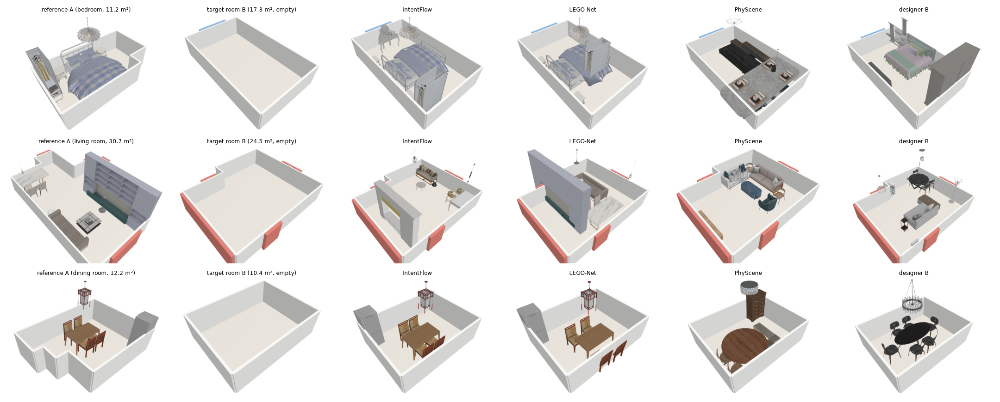
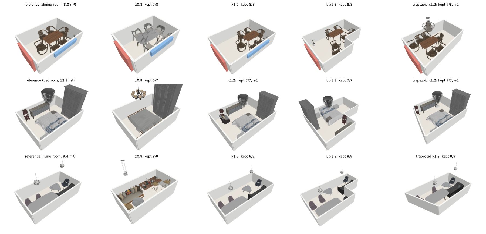
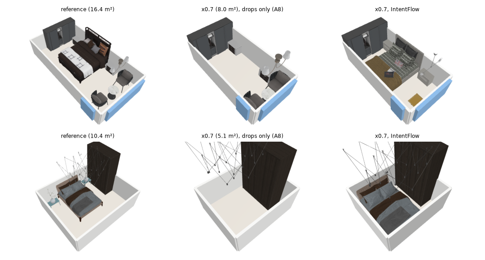
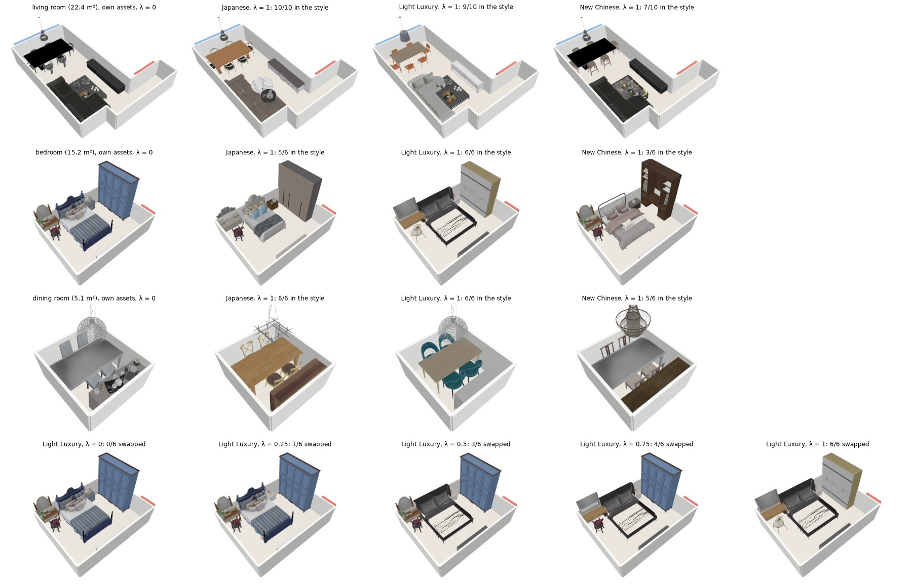
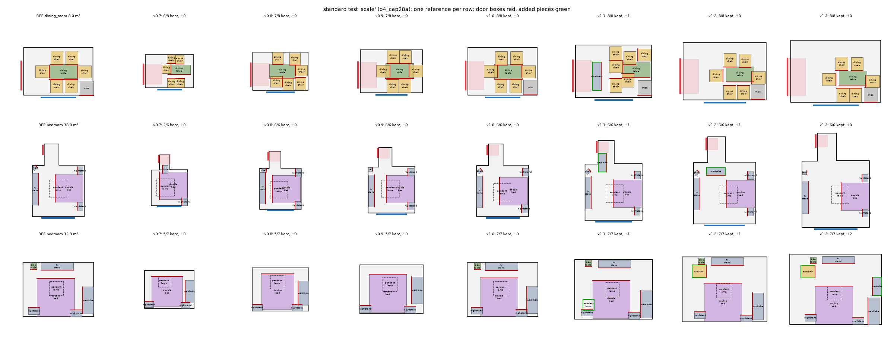
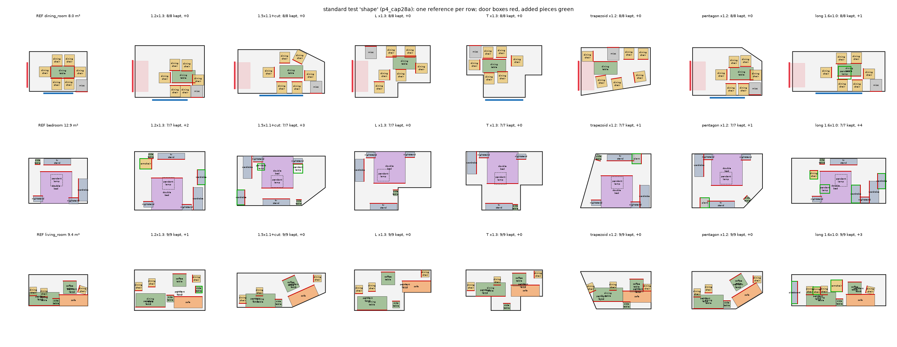
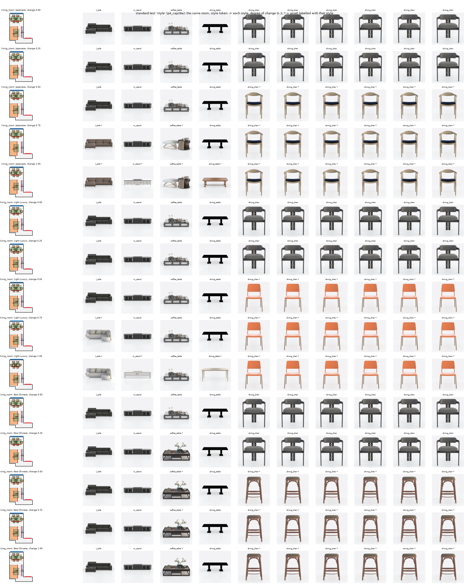

MethodExperimentsReferencesAppendix

Abstract. Reference-to-room arrangement transfer aims to retarget a reference room's furniture layout into an empty target room with a different scale, boundary, and door/window configuration, while preserving the functional groupings and spatial intent of the original design. An interior designer performing this task jointly determines what to keep, drop, or substitute under space constraints, and rearranges pieces to respect wall relations and operational clearances. We present IntentFlow, a framework that unifies learning-based intent reasoning with contact-preserving geometric projection. Conditioned on the reference arrangement and target boundaries, a single transformer trunk drives a rectified-flow velocity head to transport furniture from an affine transplant, while auxiliary heads predict discrete downsizing actions and set completion. Crucially, the pairwise contacts naturally formed at the flow endpoint define the reference's emergent design-intent graph, eliminating the need for an explicit relation model. A GPU-accelerated augmented Lagrangian projection enforces physical non-penetration, doorway clearances, and ergonomic functional zones while holding these emergent contacts. Furthermore, by disentangling spatial arrangement from visual appearance, a style token enables swapping 3D assets to a target aesthetic with small layout distortion (\(D\) 0.02–0.03). Evaluated on a frozen test set of 300 real room pairs and 700 reshaped targets, IntentFlow preserves reference arrangements with a relation distance of \(D_A = 0.081\), significantly outperforming LEGO-Net (0.184) and PhyScene (0.386; both p<0.001), while leaving only 0.4% of pieces out-of-room (LEGO-Net 17.5%, PhyScene 15.9%). Holding flow-induced contacts reduces torn touching pairs from 19.7% to 13.1%, whereas directly optimizing relation distance reaches \(D_A = 0.071\) at the cost of tearing 21.3% of contacts. On visual realism measured by top-down DINOv3 Fréchet Distance, IntentFlow (FD 11.7) matches a generative baseline that arranges the reference's objects on its own (MiDiffusion, FD 11.6) while maintaining arrangement fidelity (\(D_A = 0.081\) against 0.358). The complete pipeline runs in 1.06 s median latency on a GPU.
When furnishing a new living space, occupants frequently seek to transfer a proven interior arrangement from a reference home into their own. However, target rooms typically exhibit divergent floor dimensions, non-congruent polygonal outlines, and mismatched door and window locations (Fig. 1). An expert interior designer addressing this challenge does not generate a layout from scratch; rather, they perform reference-to-room arrangement transfer: determining which signature pieces to retain, dropping or downscaling secondary items that no longer fit, introducing complementary additions called for by the new room, and adjusting continuous poses so that functional clusters, traffic flow, and wall orientations are preserved. Formally, given a furnished reference scene \(S_\text{ref}\) and an empty target floor plan \(P_t\), the goal is to synthesize a populated layout in \(P_t\) that preserves the relational design intent of \(S_\text{ref}\) while remaining physically feasible and usable.
This task is challenging due to four coupled factors. First, discrete and continuous decisions interact: spatial feasibility dictates which items can fit, yet spatial placement itself depends on which items are retained or downscaled. Second, design intent is not a static list of categorical relations; spatial relations deform under aspect-ratio changes, and which pairwise contacts should survive depends on the target boundaries. Third, real-world retargeting often requires style-layout disentanglement: homeowners frequently wish to renew asset appearances (e.g., transitioning to a different furniture aesthetic) while maintaining the familiar spatial grouping. Fourth, the generated scene must respect hard architectural and ergonomic constraints — preventing interpenetration, avoiding door and window obstructions, and leaving clearance for pulling out chairs, opening wardrobe doors, and accessing beds — which unconstrained neural generators meet only up to their regression error.
Prior indoor scene generators [1, 2, 3, 4, 5] sample plausible layouts from scratch conditioned on boundaries or text, but discard the specific spatial arrangement of a reference scene. Rearrangement models such as LEGO-Net [6] iteratively regularize messy layouts toward corpus distributions rather than transferring intent across non-isomorphic spaces. Layout optimization methods [7, 8] optimize hand-crafted energy terms without learning human downsizing decisions from data.
We present IntentFlow, a framework that couples neural intent reasoning with contact-preserving geometric projection (Fig. 2). Reference pieces are mapped into the target room via an affine transplant and processed by an attention trunk alongside wall and opening tokens. Along the flow, a rectified-flow velocity head transports the furniture to its new place; the pairs the flow places in contact define the emergent design-intent graph in the target room, without hand-crafted relation categories or a separate relation head. Evaluated at flow initiation (\(\tau=0\)), a keep head predicts human designer actions during downsizing (keep, replace by a smaller piece of the family, or drop), learned from 34,120 downsizing pairs of corpus rooms, while an add head proposes additions via set completion. An optional style token swaps the assets for a target style while keeping the layout. Finally, to guarantee physical validity without diluting the learned intent, a GPU-accelerated augmented Lagrangian projection (\(\Pi_\theta\)) enforces containment, non-penetration, and functional clearances while holding the flow-induced contact groups. Table 1 lists which decisions are learned and which are rules.
Our principal contributions are:
Indoor scene synthesis. Generative modeling of indoor layouts has advanced through autoregressive transformers [1, 2], denoising diffusion models [3], and semantic graph conditioning [4, 9, 10]. To enforce physical plausibility, PhyScene [5] introduces collision and reachability guidance during diffusion sampling. Recent frameworks leverage LLMs and vision-language models for layout planning [11, 12] or optimize layouts against model-proposed relations [13]. MiDiffusion [14] addresses scene completion and arranges pre-specified object sets within a given floor plan. Classic approaches optimize hand-crafted interior design guidelines by stochastic search [7, 8] or sample from spatial statistics learned from a few exemplar scenes [15]. These methods model a layout given a room; a reference scene enters at most as a category list or a semantic graph, so its continuous geometry, wall relations and spatial grouping are not transferred.
Scene rearrangement. Rearrangement models transform disordered scenes into structured ones. LEGO-Net [6] learns to iteratively denoise messy furniture configurations into regular layouts. Given the transplanted reference layout, it moves furniture toward the arrangements of its training corpus rather than preserving the reference, and since it does not receive the room's walls and doors as constraints, pieces end across walls or in doorways when the target outline departs from the reference (§5.2).
Spatial relations and set completion. Relational layout pipelines typically plan a scene graph over a fixed vocabulary of predicates (e.g., surrounding, against, supported-by) and then instantiate boxes [16, 4]. Such categorical abstractions are brittle under continuous deformations, where distances and orientations warp non-uniformly. IntentFlow uses no relation categories: every pair of entities receives the same continuous geometric descriptor, injected as an additive attention bias as in Graphormer [17], and the design-intent graph is not classified by a separate head but read from the contacts at the end of the flow. On the discrete side, adapting to a room requires reasoning about how many pieces a set holds. Related to set-based architectures [18, 19] and recommendation by graph completion [20, 21], our keep and add heads treat downsizing and additions as sequential set completion with explicit stopping criteria, learned from designers' room pairs.
Flow matching and constrained optimization. Flow matching [22] and rectified flow [23] regress velocity fields along straight paths between two distributions. Where standard rectified flows transport Gaussian noise to data, IntentFlow starts from an informative source, the perturbed affine transplant; sampling uses 50 Euler steps, and with 10 steps \(D_A\) changes not significantly (§5.7). The backbone is a permutation-equivariant transformer [24] with adaptive layer-norm conditioning [25] as in DiT [26]. Rather than relying on soft penalty losses during generation, we decouple physical validity from learning: non-penetration, containment and clearances are resolved by an augmented Lagrangian solver [27], which projects the transport endpoint onto the non-convex feasible set while holding the model's emergent contact graph.
IntentFlow treats arrangement transfer as continuous transport, discrete set adaptation and constrained projection (Fig. 2). One attention trunk of 8 blocks processes the furniture together with the target room's walls and openings. The design intent is not classified as a static graph; it emerges along the flow: the pairs placed in contact at the end of the flow define the groups that the feasibility projection must not tear apart.
Problem definition. A reference room is a set of \(N\) placed pieces \(S_\text{ref}=\{(c_i,s_i,p_i,\theta_i,a_i)\}_{i=1}^N\), where \(c_i\) is the category, \(s_i\in\mathbb R^3_{>0}\) the size of the bounding box, \(p_i\in\mathbb R^2\) the floor position, \(\theta_i\in[-\pi,\pi)\) the yaw and \(a_i\) a 3D-FUTURE asset [28]. The empty target room \(P_t\) is a simple polygon with the segments of its doors \(\mathcal D\) and windows. Optionally a style token \(z^\star\in\mathbb S^{31}\) and a degree of change \(\lambda\in[0,1]\), the fraction of pieces to restyle, are given. The output is a layout \(\{(c_j',s_j',p_j',\theta_j',a_j')\}_{j=1}^{N'}\) in \(P_t\) that keeps the groupings, orientations and wall relations of \(S_\text{ref}\), with pieces removed, replaced by a smaller or restyled asset of the same kind, or added (\(N'\neq N\) in general), under hard physical and functional constraints.
Relation descriptor. Instead of discrete relation categories (e.g. left-of, facing), the relation of an ordered pair \((u,v)\) is a continuous descriptor \(\phi_{uv}\in\mathbb R^6\): \(v\)'s offset in \(u\)'s frame (2), \(\cos\) and \(\sin\) of the relative yaw, the gap between the two footprints and the centre distance. Walls, doors and windows are nodes framed by their segment midpoint and inward normal and use the same descriptor, so piece–piece and piece–boundary pairs are represented alike.
Arrangement distance. The per-relation distance
$$\begin{aligned}d(\phi,\phi')=\tfrac{1}{3.5}\Big[&\tfrac{1-\cos\angle(\phi_{1:2},\phi'_{1:2})}{2}+\tfrac{1-\cos(\Delta\theta-\Delta\theta')}{2}\\&+\min\!\Big(\tfrac{|\log(\phi'_6/\phi_6)|}{\log 3},1\Big)+\tfrac12\,\big[\,[\phi_5<0.05]\neq[\phi'_5<0.05]\,\big]\Big]\in[0,1]\end{aligned}\tag{1}$$penalises four distinct distortions: the direction of \(v\) as seen from \(u\); the orientation of \(v\) relative to \(u\) (for example, a coffee table turning away from its sofa); the ratio of their distances on a log scale, sensitive to changes between close pieces and saturating for distant ones; and whether they touch (gap below 5 cm), a discrete penalty when a contact is torn or created. The terms are invariant to moving and rotating the whole layout and lie in \([0,1]\): unlike a Chamfer distance or an IoU of footprints, the measure reacts to a turned piece and to a lost contact of a few centimetres. Between two layouts of corresponding pieces,
$$D(S,S')=\frac{1}{|\mathcal E|}\sum_{(i,j)\in\mathcal E}d\big(\phi_{ij},\phi'_{ij}\big),\tag{2}$$over all ordered pairs \(\mathcal E\) of pieces present in both. We write \(D\) for the distance of an output to its reference and \(D_A\) for the same on real held-out pairs, where \(A\) is the reference room.
Tokens. IntentFlow starts from an informative source rather than from noise: the affine transplant \(\mathcal T_q(S_\text{ref},P_t)\), which maps each pose proportionally between the minimum rotated rectangles of the two rooms, under the quarter turn \(q\in\{0,\tfrac\pi2,\pi,\tfrac{3\pi}2\}\) that best overlaps the outlines. A furniture token holds the piece's category, log size, elevation and current state \(x_{\tau,i}=(p_i/L,\cos\theta_i,\sin\theta_i)\) (\(L=3\) m) with Fourier features, the distances of its sides to the walls now and in the reference, the votes of the other pieces (where each other piece's reference relation puts it, given that piece's current pose), and its reference functional relations \(\nu_i\): offset, relative yaw and gap to the nearest wall, door and window, and what is left to undo in \(P_t\). Wall segments and openings (with their clearance boxes) of \(P_t\) are tokens of the same attention.
Relational attention bias. Pairwise geometry enters the attention logits [17]: for layer \(l\) and head \(h\), \(A^{(l,h)}=\operatorname{softmax}\big(QK^\top/\sqrt{d_k}+B^{(l,h)}\big)\) with \(B^{(l,h)}_{ij}=\mathrm{MLP}^{(l,h)}(e_{ij})\), where \(e_{ij}\) holds the pair's current geometry, its reference relation \(\phi_{ij}\) and the offset still to undo. Adaptive layer norm [25] injects the conditioning vector \(c\): the flow time, room descriptors and a pooled code \(\zeta_\text{ref}\) of the reference's room-free relations from a 4-block reference encoder. The trunk (Fig. 3) has 8 blocks of width 256 with 8 heads and is permutation-equivariant; the answer never enters an input.
Analysis heads at \(\tau=0\). Read once with every piece at its transplant pose,
$$\begin{gathered}\pi_i=\big(\pi_i^\text{keep},\pi_i^\text{repl},\pi_i^\text{drop}\big)=\operatorname{softmax}\big(\mathrm{MLP}_\pi(e_i)\big),\qquad \kappa_i=1-\pi_i^\text{drop},\\ r=\operatorname{softplus}\big(\mathrm{MLP}_r[\bar e_F,\bar e_R,c]\big)\in\mathbb R_{\ge0}^{64},\end{gathered}\tag{3}$$with \(e_i\) the final token of piece \(i\), \(\bar e_F\), \(\bar e_R\) the means over furniture and room tokens and \(c\) the conditioning vector. \(\pi_i\) gives the probabilities that a designer, short of space in this room, keeps piece \(i\) as it is, replaces it by a smaller piece of its family (a single bed for a double bed) or gives it up, and \(r_c\) the expected number of pieces of category \(c\) still to add. Both heads are read again after every action of the inference path (§3.3), on what is still kept.
Supervision of the discrete decisions. A real pair is a room \(A\) and a room \(B\) of the same type from another home whose category-family sets have Jaccard similarity above 0.6 and whose area ratio lies in [0.5, 2]; pieces are matched within families by footprint size [29]. Additions are learned as set completion: a row carries \(A\)'s kept pieces in \(B\)'s empty room and a random part of what \(B\) added, and \(n_c\) counts what \(B\) added beyond it, zero once the set is complete. The keep head is learned from 34,120 downsizing pairs (§4): a larger room \(X\) and a smaller room \(Y\) of the same type furnished with part of \(X\)'s furniture. A designer's reductions come without a recorded order, so a row is a state of the pair — a random part of the designer's actions already applied to \(X\) (pieces \(Y\) gave up removed, pieces \(Y\) replaced by another category of their family given \(Y\)'s category and size), read in \(Y\)'s room or in \(X\)'s room scaled to \(Y\)'s area. Rows of larger rooms, where nothing is given up, teach the head when to keep everything. With \(\mathcal A\) the actions on the state (give up or replace a floor piece), \(\mathcal R\subseteq\mathcal A\) those the designer took and that are not yet applied, \(K\) the pieces still in the state and \(y_i\) what finally happens to piece \(i\),
$$\begin{gathered}\mathcal L_\text{add}=\frac{1}{3}\sum_c\big(r_c-n_c\log r_c\big),\qquad \mathcal L_\text{keep}=-\log\frac{\sum_{a\in\mathcal R}e^{s(a)}}{\sum_{a\in\mathcal A}e^{s(a)}}-\frac{1}{|K|}\sum_{i\in K}\log\pi_i^{y_i},\\ s(\text{drop}\,i)=\log\frac{\pi_i^\text{drop}}{\pi_i^\text{keep}},\qquad s(\text{replace}\,i)=\log\frac{\pi_i^\text{repl}}{\pi_i^\text{keep}},\end{gathered}\tag{4}$$\(\mathcal L_\text{keep}\) is the likelihood that the next action is one of the designer's remaining actions, whichever their order, plus a cross-entropy on the final outcome; \(\mathcal L_\text{add}\) is a Poisson negative log-likelihood. No annotation enters the labels. The trunk was trained with the add loss, the placement loss below and two auxiliary readings of real pairs (a keep label of \(A\)'s pieces and how much of each relation \(B\) keeps, Appendix A); the keep head is then trained on the downsizing rows with the trunk frozen, so the placement is unchanged by it, and the relation reading is removed from the final model.
Rectified flow on poses. Placement is a rectified flow [23, 22] from the transplant: the source \(x_0\) is \(\mathcal T_q(S_\text{ref},P_t)\) with Gaussian noise (standard deviation 0.1 in the normalised position frame and 0.25 rad in yaw), in training and at inference alike, so the flow transports a distribution of perturbed transplants to the designers' layouts rather than regressing from one point. Positions move on straight paths and yaws along the shorter arc,
$$\begin{gathered}x_\tau=\big((1-\tau)p_0+\tau p_1,\ \theta_0+\tau\,\Delta\theta\big),\\ \mathcal L_\text{FM}=\mathbb E_{\tau}\sum_{i}m_i\Big(\big\lVert v^p_{\vartheta,i}-(p_{1,i}-p_{0,i})\big\rVert^2+R_i^2\big\lVert v^\theta_{\vartheta,i}-\Delta\theta_i\,\mathbf e_\perp(\theta_{\tau,i})\big\rVert^2\Big),\end{gathered}\tag{5}$$in metres: \(R_i\) is the piece's half diagonal, so a yaw error counts as the displacement of a corner and rotation and translation are weighed in the same unit; \(\mathbf e_\perp(\theta)=(-\sin\theta,\cos\theta)\); \(m_i\) masks supervised pieces. Wall-contact and wall-parallel heads are trained with binary cross-entropy (contact within 5 cm, yaw within 4° of the room axes), and a relative term (weight 1) keeps the offsets of neighbouring pieces (within 0.3 m). Sampling takes 50 Euler steps over \(\tau\in[0,1]\). Analysis and placement rows share every trunk parameter.
Downsizing. When the target is smaller than the reference, pieces must be given up or replaced, and the discrete reduction is decided before the continuous placement. A piece that cannot fit the target at all is replaced by the largest fitting asset of its category, else of its most frequent substitute in the downsizing pairs, else removed. Then, while the footprint of the kept set \(K\) exceeds the density budget \(B(P_t)\), with \(\rho\) the area ratio of target and reference and \(q_{95}\) the 95th percentile of furniture density of the room type in the corpus, the designer's most likely next action is applied and the keep head is read again on what is kept:
$$\begin{gathered}a^\ast=\arg\max_{a\in\{\text{drop}\,i,\ \text{replace}\,i\,:\,i\in K\}}s(a)\quad\text{while}\quad\sum_{i\in K}\mathrm{fp}_i>B(P_t)\ \ \text{and}\ \ s(a^\ast)>0,\\ B(P_t)=\max\big(\mathrm{fp}_\text{ref}\min(1,\rho+0.14),\ q_{95}\,|P_t|\big),\end{gathered}\tag{6}$$with \(s\) the log-odds of eq. 4. When \(s(a^\ast)\le0\), keeping every remaining piece is more likely for a designer than any further action, and the loop stops rather than strip the room; whatever the budget still asks is left to smaller assets and the projection. A replacement takes the most frequent substitute category of the family in the downsizing pairs with an asset that fits and is smaller, at a typical size and closest in appearance to the room. If the projected layout is still infeasible or less walkable than the reference (by more than 0.05 of free floor), up to 3 further pieces may go, lowest \(\kappa_i\) first, and only pieces with \(\kappa_i<\tfrac12\). A free-standing piece takes as host the largest piece it touches after the flow, if larger than itself, and keeps its host's direction in the projection. If the kept set is still infeasible, smaller assets of the same 3D-FUTURE fine category are tried, then the other ambiguous quarter turns. Candidates are compared lexicographically: feasible, as walkable as the reference, fewest departures, smallest relation loss.
Additions. In a room that calls for more, the add head reads the current set \(K\cup A\) and pieces are added one at a time:
$$\begin{gathered}c^\ast=\arg\max_{c\notin\mathcal X}r_c(K\cup A)\\ \text{while}\quad P(\text{no further piece})=\exp\Big(-\sum_{c\notin\mathcal X}r_c(K\cup A)\Big)\le\tfrac12,\end{gathered}\tag{7}$$where \(\mathcal X\) holds the catch-all categories (misc, decoration, other), which name no kind of furniture, categories that did not fit, and every category of the family of a reference floor piece the room gave up, so a piece given up for space does not return as an addition. An added piece starts next to its most frequent partner category already in the room, at an offset drawn from corpus statistics, is placed by the flow with the rest fixed, and is kept if the projected layout stays feasible and walkable; at most 6 pieces are added.
The division of labour. Which decisions should be learned and which left to deterministic rules and optimisation? Physical limits pushed into a network are met only up to its error, which shows as interpenetration and pieces crossing walls; a rule-based optimiser of the relation distance, conversely, has no notion of which pieces a designer keeps together (§5.2). IntentFlow learns what resists hand-coding — the continuous transport \(v_\vartheta\), the contacts it keeps (\(\mathcal F\)), which piece a smaller room gives up first (\(\pi_i\)), what a designer adds (\(r_c\)) and which pieces stand against walls — and leaves to rules and to the projection what has an explicit physical or catalogue definition: non-penetration and containment, asset retrieval by size, door, window and usage clearances, and the density budget, the substitute category, smaller assets, the quarter turn and the choice among candidates around them. Table 1 lists every decision with its hand-set constants, and §5.4 removes each learned part and each rule in turn and varies the constants.
| decision | made by | hand-set constants |
|---|---|---|
| what a smaller room gives up or replaces next | learned: keep head, the designer's most likely next action (eq. 6), trained on downsizing pairs | pairs: smaller room ≤ 95% of the area |
| which smaller piece replaces it (double → single bed) | corpus statistics: the most frequent substitute category of its family in the downsizing pairs | typical size, closest appearance |
| how many pieces go | rule: density budget \(B(P_t)\) (eq. 6); learned: stop where no action is more likely than keeping its piece | slack 0.14; corpus 95th-percentile density per room type |
| further removals (infeasible or less walkable) | rule, ordered by the keep head, only pieces with \(\kappa_i<\tfrac12\) | at most 3; walkability tolerance 0.05 |
| smaller assets | rule: shrink ladder within the 3D-FUTURE fine category | 0.9, 0.8, 0.7, 0.6, 0.5, 0.4 |
| quarter turn of the transplant | rule: outline overlap | ambiguous within 0.05 IoU |
| choice among candidates | rule: lexicographic (feasible, as walkable, fewest departures, relation loss) | feasible below 1 cm |
| what to add | learned: add head, rates \(r_c\) (eq. 7) | stop at \(P(\text{no further})>\tfrac12\); catch-all categories and the families given up excluded; at most 6 |
| where an added piece starts | rule: corpus offset to its most frequent partner | best of 24 samples |
| where pieces go | learned: velocity head, 50 Euler steps (eq. 5) | source noise 0.1 / 0.25 rad |
| which pieces stay together | learned: the pairs touching in the reference that the flow places touching; rule: \(\Pi_\theta\) holds them (eq. 8) | touching: gap ≤ 5 cm; held within 3 cm |
| wall contact, wall-parallel | learned: wall heads; rule: pieces parallel to the walls in the reference stay parallel | contact within 3 cm |
| whose direction a piece follows (host) | learned: the largest piece the flow places it touching | — |
| feasibility | optimisation: \(\Pi_\theta\) (eq. 8) | allowances from corpus overlap rates; door box ≥ 1 × 0.9 m |
| window fronts, clearance to use chairs, beds and storage | rule: constraints of \(\Pi_\theta\) (eq. 8) | window box 0.5 m deep, pieces over 1.2 m kept out; 0.4 m behind dining chairs, along bed sides, in front of storage |
| asset appearance (style token) | rule: retrieval by a learned appearance vector, units in order of gain (eq. 10) | size tolerance 12%, 20%, 30% |
Table 1. Division of labour across the inference path: the decisions made by the network (the head that makes them), by corpus statistics, by rules and by the projection, with the constants set by hand. The constants are read from the code.
A flow meets non-convex boundary conditions only up to its error, which leaves small overlaps and clearance violations. \(\Pi_\theta\) returns the feasible layout closest to the placed poses \((\hat p,\hat\theta)\) that keeps the flow's groups together:
$$\begin{aligned}&\min_{p,\theta}\ \sum_i\lVert p_i-\hat p_i\rVert^2+\big(R_i(\theta_i-\hat\theta_i)\big)^2\\\text{s.t.}\ &\mathrm{pen}(i,j)\le\alpha_{ij}\ \ (i,j\ \text{overlapping in height}),\qquad \text{corners}(p_i,\theta_i)\subset P_t,\qquad \mathrm{pen}(i,b)\le0\ \ (b\in\mathcal D),\\&\theta_i\in\Theta_i\ \ (i\ \text{locked}),\qquad \mathrm{gap}(i,\ell_i)\le0.03\,\text{m}\ \ (i\in\mathcal C),\qquad \mathrm{gap}(i,j)\le0.03\,\text{m}\ \ ((i,j)\in\mathcal F),\\&\mathrm{pen}(i,w)\le0\ \ (w\in\mathcal W,\ \mathrm{top}_i>1.2\,\text{m}),\qquad \mathrm{pen}(j,q)\le0\ \ (q\in\mathcal Q_i,\ j\in\mathcal Q_i^{-})\end{aligned}\tag{8}$$Objective and contacts. The objective is each piece's move, angles as corner arc length. \(\mathcal F\) holds the emergent flow contacts: pairs touching in the reference (gap below 5 cm) that the flow placed touching. The flow has decided that they belong together, and the projection may move such a group out of an overlap but not tear it apart (for example, the nightstands beside a bed); without \(\mathcal F\) the projection tears 19.7% of the reference's touching pairs on real pairs, with it 13.1% (§5.4).
Penetration and allowances. \(\mathrm{pen}\) is the separating-axis penetration depth of two oriented boxes. Instead of zero penetration for every pair, which designers' rooms contradict, the allowance \(\alpha_{ij}=o_{c_ic_j}\min(R_i,R_j)\) uses the 95th percentile \(o_{c_ic_j}\) of the penetration of the two categories in the training rooms, times the smaller half diagonal (a dining chair may slide under its table). \(\mathcal D\) are door clearance boxes of the door's width (at least 1 m) and 0.9 m depth. The orientation set \(\Theta_i\) is the nearest wall's direction \(+k\pi/2\), or the host's direction for a hosted piece; a piece parallel to the walls in the reference stays parallel, other pieces are locked when the wall-parallel head says so, and added pieces always take the orientation set. Pieces the wall-contact head marks (\(\mathcal C\)) end within 3 cm of their nearest wall \(\ell_i\).
Usage zones. \(\mathcal W\) are boxes 0.5 m deep in front of each window, the window's width, that no floor piece taller than 1.2 m may enter, so tall storage does not block a window. \(\mathcal Q_i\) are functional clearance boxes 0.4 m deep attached to a piece and moving with it — behind a dining chair, to pull it out; along both long sides of a bed, to get in; in front of a storage piece (wardrobe, cabinet, chest of drawers, sideboard, bookcase, shelf), to open it. The boxes hold for every pair that involves an added piece: \(\mathcal Q_i^{-}\) holds every other floor piece when \(i\) is added and the added pieces otherwise, except nightstands and side tables beside a bed and pieces the flow keeps touching the owner. Between kept pieces the reference's arrangement, as the flow placed it, prevails: holding the boxes there too tears the reference's groups (§5.4).
Solver. With the constraints written \(g_k(p,\theta)\le0\), the augmented Lagrangian [27] minimises
$$\mathcal L_\rho(p,\theta,\lambda)=\sum_i\lVert p_i-\hat p_i\rVert^2+\big(R_i(\theta_i-\hat\theta_i)\big)^2+\frac\rho2\sum_k\max\!\Big(0,\ \frac{\lambda_k}\rho+g_k(p,\theta)\Big)^2$$with 20 Adam steps per outer iteration and the multipliers updated as \(\lambda_k\leftarrow\max(0,\lambda_k+\rho\,g_k)\); the penalty \(\rho\) is doubled when the worst violation does not fall below 0.25 of the previous one, and the solver stops at 1 cm. On the GPU the whole loop runs as CUDA graphs (§5.7); a projection takes 1.42 s per target on average there. The hard constraints are not learned: on the endpoint estimate \(\hat x_1=\mathbb E[x_1\mid x_\tau]\) a non-convex feasible set can make them infeasible even for the exact flow (the mean of a chair left and right of a doorway lies in the doorway), and on samples any position error violates constraints on whose boundary the training targets lie, so the projection enforces them per sample.
People who move often want new furniture in another style while keeping the arrangement they are used to. Because IntentFlow carries the arrangement in the poses and contacts the flow produces, not in particular 3D assets, the appearance of the furniture can change while the layout is kept.
Appearance vectors. Each catalogue asset \(k\) gets an appearance vector \(z_k\in\mathbb S^{31}\), an MLP of its room co-membership embedding (a PPMI factorisation, cf. [30]), its CLIP image features [31] and its 3D-FUTURE style, theme and material labels, trained to rank the designer's asset of a held-out piece against same-category assets by the mean appearance of the room's other pieces [32], with a supervised contrastive term on the style label [33]:
$$\mathcal L_z=-\log\frac{\exp(\langle z_{k^\ast},\bar z_{\text{room}\setminus k^\ast}\rangle/\gamma)}{\sum_{k\in\mathrm{cat}(k^\ast)}\exp(\langle z_k,\bar z_{\text{room}\setminus k^\ast}\rangle/\gamma)}+\mu\,\mathcal L_\text{SupCon}(z;\text{style label}),\tag{9}$$with \(\gamma=0.1\). A style token \(z^\star\) is the mean appearance vector of the assets carrying a style label.
Gain-ordered substitution. Pieces are grouped into units of identical assets (a set of matching dining chairs, a pair of nightstands). A unit's candidate is the asset of the same category and the same 3D-FUTURE fine category closest to \(z^\star\) within a size tolerance (tried as 12%, 20%, 30% per dimension); its gain is \(\langle z_\text{new},z^\star\rangle-\langle z_\text{own},z^\star\rangle\). Units are ordered by gain, \(u_1,u_2,\dots\), and a prefix is swapped whose piece count is nearest to \(\lambda N\):
$$U(\lambda)=\{u_1,\dots,u_m\},\qquad m=\arg\min_{m'}\Big|\sum_{k\le m'}|u_k|-\lambda N\Big|.\tag{10}$$so the swapped set only grows with \(\lambda\).
Why the layout is kept. The swap happens before placement: the network sees a piece's category and size, never its appearance, and the contacts it keeps are defined on footprints, so a new asset only has to fit within the size tolerance for the flow and \(\Pi_\theta\) to keep the arrangement. If the kept set must take smaller assets (§3.3), a swapped piece takes the smaller asset within the style label, or the smaller version of its own asset if the label has none; unswapped pieces shrink within their own appearance. The density budget of Eq. 6 is computed with the assets the pieces will have, so a restyle alone never removes a piece. On the large test split the arrangement drifts by \(D\) 0.02–0.03 across all degrees of change (§5.5): the appearance changes, the arrangement stays close to the reference.
Corpus. We use 3D-FRONT [34] rooms with 5–24 pieces after duplicate removal (13,729 rooms) and the 3D-FUTURE assets [28], split by house into 10,988 training, 1,402 validation and 1,339 test rooms. No model sees validation or test rooms in training.
Real designer pairs. Training rooms and their partners give 31,112 real pairs from 9,205 rooms for the add head and, while the trunk was trained, its auxiliary keep and relation readings. Two designers' arrangements of matched pieces are a median \(D=0.35\) apart, and designer \(B\) adds pieces in 87% of pairs (2.82 per pair; measured on 6,828 pairs). Placement rows use pairs whose relation change is small (\(D\le0.15\), 3,350 pairs), the matched pieces carried from \(A\) into \(B\)'s room and placed as \(B\)'s designer did.
Downsizing pairs. To train the keep head without annotated actions, we mine the corpus for downsizing pairs \((X,Y)\): two training rooms of the same type, furnished by designers, where the smaller \(Y\) (at most 95% of \(X\)'s area) holds a sub-multiset of \(X\)'s category families; pieces are matched within families by footprint size. The corpus gives 34,120 such pairs from 8,914 larger rooms (16,640 bedroom, 15,020 living room, 1,466 dining room). The designer's reductions (pieces of \(X\) dropped, or replaced by a smaller category of their family in \(Y\)) come without an order; the training states apply a random part of them (§3.2), so the head learns which action comes next from any intermediate layout rather than only the end state. They train the keep head (§3.2) and give the substitute categories of §3.3. For the keep head every 7th room is held out, as the larger and as the smaller room, which leaves 25,912 training pairs and 539 validation pairs of rooms the head never saw.
Augmentation. Real pairs rarely cover strongly reshaped or rescaled rooms. For 2,990 training rooms, target rooms of other outlines and sizes (L 705, pentagon 666, T 716, trapezoid 679, size 793, delete 2,127, big 2,982 targets) receive layouts from a constraint-aware, relation-preserving layout optimisation of the reference that keeps the reference's wall sides; they are used only as augmentation for placement, never for the keep or addition heads.
Label fixes. The corpus preprocessing had labelled the 3D-FUTURE fine category “Footstool / Sofastool / Bed End Stool / Stool” as double bed (2,849 of 8,169 pieces; median footprint 0.30 m² against 4.72 m² for the beds). We relabel these pieces as misc. Other mixed labels remain: wardrobe includes “Bookcase / jewelry Armoire” (3,178 of 9,210); sofa includes “Lazy Sofa” (167 of 3,499); l sofa includes “Chaise Longue Sofa” (52 of 900). Asset substitution picks within the same fine category.
Training. The trunk is first trained for placement and then with the analysis readings, on mixed batches of placement and analysis rows (AdamW, learning rate 0.0003, batch 64, EMA 0.999, bf16); its final stage runs 20,000 steps. The keep head is then trained for 4,000 steps with the trunk frozen (AdamW, learning rate 0.001, batch 64; rows in the given room, in the scaled room and in larger rooms in proportions 0.375 : 0.375 : 0.25). Appendix A lists all settings and the training stages.
Test sets. The main comparison (§5.2), the pipeline ablations, the downsizing tests and the augmentation ablation of §5.4 and the style test (§5.5) use a test set frozen once from the held-out test rooms with fixed selection rules and never used for training or tuning (between the two trunks trained for 20,000 steps with and without the wall-side constraint in the augmentation, §5.4, the one shown is the one with the lower \(D_A\) on the validation real pairs, the primary metric: 0.082 against 0.084; the keep head was selected on its held-out downsizing pairs): 700 standard-test targets (50 rooms with 6–12 pieces including a bed, a sofa with a TV or a dining set; each scaled by 0.7×, 0.8×, 0.9×, 1.0×, 1.1×, 1.2×, 1.3× and reshaped into seven outlines no smaller than the reference) and 300 real pairs \((A,B)\), in which a method furnishes \(B\)'s empty room from \(A\). The set is stored with a sha256 manifest; each baseline was run once on it and its layouts are re-scored by the same code. The comparisons of addition rules, projection metrics and forced wall sides (§5.4) and the qualitative results (§5.3) use the validation split, whose standard tests have 10 rooms and whose real-pair set has 120 pairs.
Metrics. \(D\) and \(D_A\) (eq. 2, over kept pieces) measure how well the reference arrangement is kept; kept is the share of reference pieces in the output. Torn pairs: of the floor pairs touching in the reference (gap ≤ 5 cm) and both kept, the share more than 30 cm apart. Wall kept: the share of the reference's wall contacts (same side) that survive, for categories where wall contact matters. Out of room: floor pieces more than 5% outside; collision: on the standard tests, floor pairs of categories the corpus never nests overlapping by more than 2% of the smaller footprint; on real pairs, all floor pairs overlapping by more than 10%, nestable pairs included (a chair under its table counts), so it is not a count of violations of \(\Pi_\theta\)'s constraint; door blocked: door boxes more than 5% covered. On real pairs, keep F1 compares the kept pieces of \(A\) with those designer \(B\) kept; add F1, precision and recall compare the added categories with \(B\)'s additions.
Usability. Measured the same way for every method and for the designers: window blocked, the share of windows whose front box (0.5 m deep, the window's width) is entered by a floor piece taller than 1.2 m; clearance entered, the share of clearance boxes (0.4 m behind every dining chair, along both long sides of every bed and in front of every storage piece) of which more than 10% is covered by another floor piece that may not stand there (any piece, kept or added; nightstands and side tables beside a bed excepted); added back, the share of real pairs in which a piece of a family the room gave up is added.
Realism without \(D\). \(D\) is our own measure, and the energy baseline minimises a form of it. As a measure that depends on neither, we render every layout top-down (floor polygon and footprint boxes coloured by category, 512 px at 3 cm per pixel, the same for every method) and compute the Fréchet distance (FD) and KID [35] of DINOv3 ViT-L/16 features [36] (the CLS token; DINO features instead of Inception, as [37] recommend) against real designer rooms: on real pairs designer \(B\)'s own layout in the same room, on the standard tests, which have no ground truth, the 285 real test rooms of the same selection not used as references. Intervals and \(p\) come from a paired bootstrap over rooms.
Baselines. Both use their released living-room checkpoints on all room types. LEGO-Net [6] receives the affine transplant of every reference piece its vocabulary covers (58% of the pieces on real pairs) with the target floor plan and denoises it with the authors' settings; other pieces stay at the transplant; it keeps everything and adds nothing. PhyScene [5] receives only the target floor plan — its released model has no object-list or arrangement conditioning — and samples with its collision, room-layout and reachability guidance; its objects are matched to \(A\)'s pieces by category (43% of \(A\)'s pieces matched on real pairs), and \(D\) is computed over the matched pieces. Two further baselines take more of the reference. Transplant + energy optimisation (in the spirit of [7, 8]) needs no learning: each transplanted reference piece is turned to its nearest target wall and held there, and the positions are optimised for a smooth form of the per-relation distance of eq. 1 over all pairs (uniform weights), with the reference's wall sides kept against walls, the corpus overlap allowances, the room and the door boxes as constraints (the rule-based optimiser that also produced our augmentation targets); every piece is kept and nothing is added. It minimises a form of the measure \(D\) reports, so \(D\) favours it by construction; its solve leaves more than 1 cm of constraint violation on 38% of the real pairs. MiDiffusion [14] receives the target floor plan and \(A\)'s object labels (its object-conditioned mode, released weights per room type, living-room weights for other types); 91% of \(A\)'s pieces have a class it knows, and its generated objects are matched to them as for PhyScene. It was trained on 20 of the 64 reference rooms of the standard tests and on room \(A\) or \(B\) of 107 of the 300 real pairs (exact house and room in its preprocessed training split), which favours it; its released weights turn 41% of its wall-side pieces to face the wall (the references: 4%), which works against it. Each baseline is also reported followed by \(\Pi_\theta\) (§5.4).
Statistics. Differences are mean paired differences over the same targets or pairs, with 95% intervals and two-sided \(p\) from a bootstrap that resamples rooms or pairs (10,000 resamples). Appendix Table 21 lists all tests.
| method | \(D_A\) ↓ | torn pairs ↓ | out of room ↓ | colliding pairs ↓ | window blocked ↓ |
|---|---|---|---|---|---|
| LEGO-Net + \(\Pi_\theta\) | 0.179 | 29.0% | 1.8% | 8.7% | 6.4% |
| PhyScene + \(\Pi_\theta\) | 0.385 | 40.1% | 2.3% | 4.7% | 1.2% |
| MiDiffusion (A's object list) + \(\Pi_\theta\) | 0.363 | 28.8% | 1.3% | 6.6% | 4.1% |
| affine transplant + \(\Pi_\theta\) (B2) | 0.094 | 34.2% | 1.1% | 5.4% | 5.0% |
| transplant + energy optimisation + \(\Pi_\theta\) | 0.079 | 22.3% | 2.6% | 6.1% | 5.0% |
| IntentFlow (ours) | 0.081 | 13.1%* | 0.4% | 6.4% | 1.8% |
| designer B's own room (reference only) | 0.332 | 26.3% | 7.0% | 6.7% | 14.1% |
Table 2. All methods followed by the same feasibility projection \(\Pi_\theta\), on the 300 real pairs of the large frozen test split (baselines as in §5.4: no contacts held, the orientation set for every piece; IntentFlow as shown). Bold: lowest in the column; *: IntentFlow lower than every baseline with \(p<0.001\) (pair-clustered paired bootstrap). Realism (FD) was measured on the methods' own outputs and is reported separately (Table 6). Last row: designer \(B\)'s own layout scored against \(A\) with the same measures (scripts/designer_b_metrics.py): a second designer keeps \(A\)'s arrangement only in part, and the corpus rooms themselves have pieces crossing walls by these thresholds.
Every method through the same projection. Table 2 passes every baseline through the same \(\Pi_\theta\) (no contacts held, the orientation set for every piece), so placement quality is separated from collision resolution. IntentFlow keeps the reference's groups best: it tears 13.1% of the touching pairs, against 22.3%–40.1% for the baselines after projection (all p<0.001). Its \(D_A\) is lower than every baseline's except the energy optimisation followed by \(\Pi_\theta\) (0.079, p=0.420), which optimises a form of \(D\) and tears 22.3% of the pairs. Out-of-room pieces are fewest with IntentFlow (0.4%). Colliding pairs, a measure that also counts chairs under their table (§5.1), are fewer for PhyScene + \(\Pi_\theta\) and affine transplant + \(\Pi_\theta\) (B2) than for IntentFlow (6.4%); windows are blocked by a tall piece in 1.8% of the cases, significantly fewer than for LEGO-Net + \(\Pi_\theta\) and affine transplant + \(\Pi_\theta\) (B2).
| method | \(D\) ↓ (kept pieces) | kept | added / room | torn pairs ↓ | wall kept ↑ | out of room ↓ | collision ↓ | door blocked ↓ |
|---|---|---|---|---|---|---|---|---|
| affine transplant (input, not a method) | 0.056 | 1.00 | 0.00 | 4.3% | 0.81 | 16.4% | 2.7% | 32% |
| LEGO-Net | 0.158 | 1.00 | 0.00 | 9.2% | 0.43 | 16.5% | 6.9% | 28% |
| PhyScene | 0.379 | 0.36 | 5.84 | 26.8% | 0.30 | 11.6% | 9.3% | 54% |
| transplant + energy optimisation | 0.049 | 1.00 | 0.00 | 5.7% | 0.89 | 5.7% | 1.4% | 17% |
| MiDiffusion (A's object list) | 0.312 | 0.92 | 0.00 | 13.7% | 0.34 | 13.2% | 4.6% | 42% |
| IntentFlow (ours) | 0.060 | 0.94 | 1.04 | 4.6% | 0.82 | 0.2% | 0.0% | 1% |
Table 3. Large frozen test split, scale test: 50 held-out rooms, each scaled by 0.7×, 0.8×, 0.9×, 1.0×, 1.1×, 1.2×, 1.3× (means over columns). \(D\) is over kept pieces and must be read with kept. The affine transplant is the input IntentFlow starts from, shown as a reference: it keeps every relation by construction and ignores the room.
| method | \(D\) ↓ (kept pieces) | kept | added / room | torn pairs ↓ | wall kept ↑ | out of room ↓ | collision ↓ | door blocked ↓ |
|---|---|---|---|---|---|---|---|---|
| affine transplant (input, not a method) | 0.073 | 1.00 | 0.00 | 26.5% | 0.58 | 13.0% | 1.1% | 28% |
| LEGO-Net | 0.141 | 1.00 | 0.00 | 26.6% | 0.26 | 9.4% | 4.6% | 18% |
| PhyScene | 0.371 | 0.40 | 7.25 | 39.9% | 0.34 | 10.0% | 5.3% | 53% |
| transplant + energy optimisation | 0.047 | 1.00 | 0.00 | 13.5% | 0.90 | 0.8% | 0.2% | 11% |
| MiDiffusion (A's object list) | 0.326 | 0.92 | 0.00 | 27.6% | 0.25 | 9.9% | 2.6% | 32% |
| IntentFlow (ours) | 0.066 | 1.00 | 1.76 | 15.3% | 0.72 | 0.0% | 0.2% | 0% |
Table 4. Large frozen test split, outline test: the same 50 rooms reshaped into seven outlines no smaller than the reference (1.2x1.3; 1.5x1.1+cut; L x1.3; T x1.3; trapezoid x1.2; pentagon x1.2; long 1.6x1.0).
| method | \(D_A\) ↓ (primary) | keep F1 ↑ | add F1 ↑ | add precision / recall | added / pair (method / designer) | torn pairs ↓ | out of room ↓ | collision ↓ | \(D_B\) (reference only) |
|---|---|---|---|---|---|---|---|---|---|
| affine transplant (input, not a method) | 0.069 | 0.864 | 0.127 | — / — | 0.00 / 3.02 | 12.6% | 30.7% | 9.8% | 0.341 |
| LEGO-Net | 0.184 | 0.864 | 0.127 | — / — | 0.00 / 3.02 | 18.6% | 17.5% | 18.6% | 0.379 |
| PhyScene | 0.386 | 0.489 | 0.184 | — / — | 5.74 / 3.02 | 34.6% | 15.9% | 13.2% | 0.378 |
| transplant + energy optimisation | 0.071 | 0.864 | 0.127 | — / — | 0.00 / 3.02 | 21.3% | 6.1% | 6.4% | 0.339 |
| MiDiffusion (A's object list) | 0.358 | 0.853 | 0.127 | — / — | 0.00 / 3.02 | 22.8% | 13.7% | 9.6% | 0.363 |
| IntentFlow (ours) | 0.081 | 0.864 | 0.237 | 0.43 / 0.15 | 1.25 / 3.02 | 13.1% | 0.4% | 6.4% | 0.342 |
Table 5. Large frozen test split, 300 held-out real pairs: a method receives room A and the empty room of a second designer's home B. \(D_A\) is the primary arrangement measure; \(D_B\), the distance to designer B, who never saw A, is a reference only. Add precision and recall are not part of the baselines' stored scores; LEGO-Net adds nothing.
On real pairs IntentFlow keeps the reference arrangement at \(D_A=0.081\), against 0.184 for LEGO-Net (−0.102 [−0.111, −0.094], p<0.001, 300 pairs) and 0.386 for PhyScene (−0.301 [−0.317, −0.284], p<0.001, 214 pairs), with 0.4% of pieces out of the room and 6.4% colliding pairs (LEGO-Net 17.5% / 18.6%, PhyScene 15.9% / 13.2%); its out-of-room rate is the lowest of the compared methods. The collision rate of the real pairs counts every overlapping floor pair, including chairs pushed under their table (§5.1), so it is not a count of violations of \(\Pi_\theta\)'s constraints. It keeps the pieces the designer kept as well as LEGO-Net, which keeps everything (p=0.979; IntentFlow's keep F1 differs on 74 of 300 pairs, higher on 39 and lower on 35), and better than PhyScene (p<0.001); its additions reach add F1 0.237 (precision 0.43, recall 0.15), above LEGO-Net (p<0.001) and PhyScene (p=0.032). It tears fewer groups than PhyScene (p<0.001) and than LEGO-Net (p=0.023).
On the standard tests IntentFlow's \(D\) is 0.060 / 0.066 (scale / outline), against 0.158 / 0.141 for LEGO-Net and 0.379 / 0.371 for PhyScene (p<0.001 in all four comparisons), and it keeps 0.82 / 0.72 of the reference's wall contacts (LEGO-Net 0.43 / 0.26, PhyScene 0.30 / 0.34). It tears fewer groups than PhyScene on both tests (p<0.001, p<0.001), and than LEGO-Net on outline targets (p=0.024), not significantly on scaled rooms (p=0.070). Its largest out-of-room, collision or door-blocking rate over all columns is 3.5%. The affine transplant keeps the arrangement best — \(D_A=0.069\) — but leaves 30.7% of pieces outside the room: \(D\) measures arrangement, not feasibility, and the gap between the transplant and IntentFlow is what feasibility costs.
Stronger baselines. The energy optimisation optimises a form of \(D\) itself and keeps the reference closer by that measure: \(D_A\) 0.071 against 0.081 (p<0.001, in the baseline's favour), \(D\) 0.049 / 0.047 on scaled / outline targets against 0.060 / 0.066 (p<0.001, in the baseline's favour; p<0.001, in the baseline's favour). On real pairs it pulls apart 21.3% of the touching pairs against 13.1% (p<0.001) and leaves 6.1% of pieces outside the room against 0.4% (p<0.001); colliding pairs 6.4% (not significant, p=0.993); on outline targets its torn pairs are 13.5% against 15.3% (not significant, p=0.430). On real pairs a lower \(D\) thus comes with more torn groups: \(D\) alone does not define the design intent, and when it is minimised a group's contacts give way to a lower distance over all pairs, while the flow keeps the contacts of its groups. It keeps every piece (keep F1 0.864, not significant, p=0.998) and adds nothing. Followed by \(\Pi_\theta\), its \(D_A\) becomes 0.079 (not significant, p=0.420) and its torn pairs 22.3% (p<0.001). MiDiffusion, given \(A\)'s object list, arranges the pieces its own way: \(D_A\) 0.358 (p<0.001), torn pairs 22.8% (p<0.001), keep F1 0.853 (p=0.022), out of room 13.7%, colliding pairs 9.6% (p<0.001).
Realism without \(D\). Table 6: on real pairs, a real room by another designer — \(A\)'s own layout in its own room — is at FD 8.8 from designer \(B\)'s rooms and pieces thrown into the room at 30.5; IntentFlow is at 11.7, the transplant at 14.7, the energy optimisation at 12.6, MiDiffusion at 11.6, LEGO-Net at 20.8 and PhyScene at 23.3. IntentFlow is significantly closer to the designers' rooms than the transplant, the energy optimisation, LEGO-Net, PhyScene (the transplant p<0.001; the energy optimisation p=0.036; LEGO-Net p<0.001; PhyScene p<0.001); it is not significantly different from MiDiffusion (MiDiffusion p=0.826); by KID, MiDiffusion is closer than IntentFlow (2.1 against 4.4, p=0.014). On the standard tests, against real rooms of the test split: IntentFlow 18.1, MiDiffusion 17.8, energy 18.4, transplant 19.5, LEGO-Net 24.4, PhyScene 27.9, scattered pieces 30.1. The measure says how much a layout looks like a designer's room, not whether it is the reference's arrangement: MiDiffusion, trained on rooms of 107 of the 300 real pairs, generates its own arrangement and reaches comparable realism at a far larger \(D_A\) (0.358): it receives \(A\)'s object list but not its arrangement. Conversely, IntentFlow keeps \(A\)'s arrangement (\(D_A\) 0.081) and is as close to the designers' rooms by FD: the transfer does not cost realism by this measure, although by KID MiDiffusion is closer. Two halves of the designers' own rooms are FD 16.2 apart at half the sample size, the noise floor of the measure at that size.
| method | real pairs: FD ↓ | real pairs: KID×10³ ↓ | standard tests: FD ↓ | standard tests: KID×10³ ↓ |
|---|---|---|---|---|
| real room (reference A in its own room) | 8.8 [7.5, 10.1] | -0.1 [-1.2, 1.1] | — | — |
| IntentFlow | 11.7 [10.6, 13.0] | 4.4 [2.0, 5.6] | 18.1 [15.5, 21.0] | 8.4 [5.1, 17.1] |
| affine transplant | 14.7 [13.3, 16.3] | 6.6 [4.0, 9.3] | 19.5 [16.6, 22.8] | 8.8 [6.3, 16.7] |
| transplant + energy optimisation | 12.6 [11.3, 14.1] | 5.0 [2.5, 6.4] | 18.4 [16.0, 21.2] | 6.6 [4.4, 13.7] |
| MiDiffusion (A's object list) | 11.6 [10.5, 12.9] | 2.1 [0.6, 2.7] | 17.8 [15.4, 20.6] | 7.2 [5.2, 13.3] |
| LEGO-Net | 20.8 [19.2, 22.7] | 17.3 [14.4, 19.9] | 24.4 [21.6, 27.4] | 17.8 [15.3, 25.4] |
| PhyScene | 23.3 [21.4, 25.4] | 23.0 [19.0, 27.2] | 27.9 [25.6, 30.2] | 28.3 [24.5, 33.3] |
| pieces thrown in the room (control) | 30.5 [28.2, 33.1] | 43.9 [37.4, 51.1] | 30.1 [27.5, 33.0] | 36.7 [29.9, 47.8] |
Table 6. Realism without \(D\): Fréchet distance and KID (×10³) of DINOv3 features of top-down renders against real designer rooms (real pairs: designer \(B\)'s layout in the same room, 300 pairs; standard tests: 285 real test rooms of the same selection, not used as references), with 95% bootstrap intervals over rooms. The first row is a real room scored as a method; the last scatters the reference's pieces at random in the room. FD is biased upward at small sample sizes, so only rows of the same set compare; the split-half floor of the real pairs is 16.2 at half size.
Usability. Table 7: with the window and clearance constraints of eq. 8 a tall piece stands in front of 1.8% of the windows on real pairs, against 24.4% without them and 14.1% in designer \(B\)'s own rooms (1.0% against 22.4% on the standard tests). Clearance boxes are entered in 21.8% of the cases, against 29.4% without the constraints and 14.9% for the designers; since the boxes do not hold between kept pieces (§3.4), what remains are kept pieces the flow placed there, as in the reference. No family the room gave up is added back (0.0% of the pairs; 1.0% without the mask, §5.4). What the constraints cost: \(D_A\) 0.081 against 0.078 (p=0.009), torn pairs 13.1% against 11.8% (p=0.152). The baselines, which have no such constraints, block 10.6% (LEGO-Net), 4.8% (PhyScene), 31.1% (energy) and 16.7% (MiDiffusion) of the windows and enter 47.9%, 34.5%, 23.4% and 29.8% of the clearance boxes.
| method | real: window blocked ↓ | real: clearance entered ↓ | real: given up, added back ↓ | std: window blocked ↓ | std: clearance entered ↓ |
|---|---|---|---|---|---|
| IntentFlow | 1.8% | 21.8% | 0.0% | 1.0% | 13.6% |
| IntentFlow without the window and clearance constraints | 24.4% | 29.4% | 0.0% | 22.4% | 21.1% |
| affine transplant | 22.6% | 24.0% | 0.0% | 23.2% | 12.1% |
| LEGO-Net | 10.6% | 47.9% | 0.0% | 3.8% | 37.9% |
| PhyScene | 4.8% | 34.5% | 0.7% | 6.0% | 30.1% |
| transplant + energy optimisation | 31.1% | 23.4% | 0.0% | 29.7% | 16.7% |
| MiDiffusion (A's object list) | 16.7% | 29.8% | 0.0% | 23.9% | 25.0% |
| designer B's own room | 14.1% | 14.9% | — | — | — |
Table 7. Usability (large test split): windows whose front box (0.5 m) is entered by a piece taller than 1.2 m; clearance boxes (0.4 m behind dining chairs, along bed sides, in front of storage) more than 10% covered by another floor piece; real pairs in which a family the room gave up is added back. The same code scores every method and designer \(B\)'s rooms; std is the mean over the scale and outline tests.
Fig. 1 shows one typical held-out real pair per room type (the pair whose \(D_A\) is closest to the median of its type). In the bedroom and the dining room IntentFlow keeps the reference's groups and their walls. The living room shows a failure: the tall TV unit, which stands against a wall facing the sofa in \(A\), ends free-standing in \(B\) and turned away from the sofa (\(B\) is 20% smaller and its pieces shrink to 0.7×). LEGO-Net moves the transplanted pieces but leaves them overlapping; PhyScene furnishes the floor plan with its own furniture. Fig. 4 shows the standard tests; Appendix E adds 2D views of the validation standard tests and of the style test.

What the network contributes. Table 9 runs the whole inference path on the large test split with one learned part replaced at a time, and without the network: the transplant followed by the same projection (B1–B3; every piece kept, or the smallest dropped until the density budget holds; the reference's wall contacts held, and the contacts that survive the transplant held except in B2; nothing added). Without the network, \(D_A\) rises from 0.081 to 0.089–0.094 (p≤0.002), outline \(D\) from 0.066 to 0.086–0.088, and torn pairs grow by a factor of 1.9–2.6 on real pairs (13.1% against 24.7%–34.2%) and 2.4–2.6 on outline targets (15.3% against 36.7%–39.6%; all p<0.001); out-of-room pieces go from 0.4% to 1.1%–1.4%. The projection-only variants keep more wall contacts (outline 0.88–0.89 against 0.72), because they hold every reference wall contact as a constraint, and they tear more groups: in reshaped rooms walls and groups conflict (see below). LEGO-Net and PhyScene followed by \(\Pi_\theta\) stay far from the reference (\(D_A\) 0.179 and 0.385): the projection makes a layout feasible but does not recover an arrangement.
Which learned part matters. The keep head acts on what a smaller room loses (A1, A8, A9; below) and leaves the arrangement measures unchanged (with the corpus rates, A1, \(D_A\) 0.082, p=0.630); which pieces stay together is the flow's decision, held by the projection (A2, A7; below).
| variant | real: \(D_A\) ↓ | real: torn ↓ | held-out downsizing: next action is the designer's ↑ | smaller real targets: core piece given up ↓ |
|---|---|---|---|---|
| (a) IntentFlow (full) | 0.081 | 13.1% | 73.0% | 2.9% |
| (b) no network: transplant + \(\Pi_\theta\) (B1–B3) | 0.089–0.094 | 24.7%–34.2% | — | — |
| (c) \(\Pi_\theta\) without the flow's contacts (A2) | 0.086 | 19.7% | — | — |
| (d) relation head put back (A7) | 0.085 | 18.5% | — | — |
| (e) keep head → corpus rates (A1) | 0.082 | 13.2% | 59.4% | 3.6% |
| (f) no network, \(D\) optimised: energy + \(\Pi_\theta\) | 0.079 | 22.3% | — | — |
Table 8. Key ablations at a glance (large frozen test split; the full set with significance marks follows in the next table). Next action: held-out downsizing pairs (§5.4, keep head against the corpus rates). Core piece given up: real pairs whose target is smaller, bed / low table / dining table given up although the designer kept it.
| variant | real: \(D_A\)↓ | real: keep F1↑ | real: torn↓ | real: add F1↑ | real: out↓ | real: coll.↓ | real: window↓ | real: clear.↓ | outline: \(D\)↓ | outline: torn↓ | outline: wall↑ | scale: torn↓ | scale: wall↑ |
|---|---|---|---|---|---|---|---|---|---|---|---|---|---|
| IntentFlow (full) | 0.081 | 0.864 | 13.1% | 0.237 | 0.4% | 6.4% | 1.8% | 21.8% | 0.066 | 15.3% | 0.72 | 4.6% | 0.82 |
| without the network | |||||||||||||
| B1 transplant → \(\Pi_\theta\), its contacts held | 0.089 ▼ | 0.864 | 25.5% ▼ | 0.127 ▼ | 1.4% ▼ | 5.5% | 5.0% ▼ | 15.6% ▲ | 0.087 ▼ | 38.7% ▼ | 0.89 ▲ | 10.6% ▼ | 0.96 ▲ |
| B2 B1 without contacts held | 0.094 ▼ | 0.864 | 34.2% ▼ | 0.127 ▼ | 1.1% ▼ | 5.4% ▲ | 5.0% ▼ | 15.7% ▲ | 0.088 ▼ | 39.6% ▼ | 0.89 ▲ | 12.5% ▼ | 0.95 ▲ |
| B3 B1, smallest pieces dropped | 0.092 ▼ | 0.803 ▼ | 24.7% ▼ | 0.127 ▼ | 1.1% ▼ | 5.9% | 2.7% | 16.7% ▲ | 0.086 ▼ | 36.7% ▼ | 0.88 ▲ | 10.2% ▼ | 0.95 ▲ |
| baselines followed by \(\Pi_\theta\) | |||||||||||||
| LEGO-Net + \(\Pi_\theta\) | 0.179 ▼ | 0.864 | 29.0% ▼ | 0.127 ▼ | 1.8% ▼ | 8.7% ▼ | 6.4% ▼ | 46.1% ▼ | 0.145 ▼ | 31.0% ▼ | 0.31 ▼ | 22.9% ▼ | 0.38 ▼ |
| PhyScene + \(\Pi_\theta\) | 0.385 ▼ | 0.489 ▼ | 40.1% ▼ | 0.184 ▼ | 2.3% ▼ | 4.7% ▲ | 1.2% | 31.9% ▼ | 0.370 ▼ | 46.1% ▼ | 0.38 ▼ | 39.5% ▼ | 0.36 ▼ |
| keep head | |||||||||||||
| A1 keep head → corpus rates | 0.082 | 0.863 | 13.2% | 0.237 | 0.4% | 6.4% | 1.8% | 22.2% ▼ | 0.066 | 15.3% | 0.72 | 3.5% ▲ | 0.82 |
| A8 drops only, no replacement | 0.082 ▼ | 0.861 ▼ | 13.0% | 0.236 | 0.4% | 6.5% | 1.8% | 22.0% | 0.066 | 15.3% | 0.72 | 4.6% | 0.82 |
| A9 no designer stop | 0.082 ▼ | 0.862 ▼ | 13.1% | 0.237 | 0.4% | 6.9% | 1.8% | 22.3% | 0.066 | 15.3% | 0.72 | 4.5% | 0.83 |
| which pieces stay together | |||||||||||||
| A2 \(\Pi_\theta\) without the flow's contacts | 0.086 ▼ | 0.865 | 19.7% ▼ | 0.239 | 0.4% | 6.1% | 1.8% | 22.1% | 0.068 | 18.7% ▼ | 0.72 | 9.1% ▼ | 0.82 |
| A7 relation head put back | 0.085 ▼ | 0.864 | 18.5% ▼ | 0.244 | 0.4% | 5.9% | 2.7% | 22.1% | 0.068 | 17.9% | 0.73 | 7.9% ▼ | 0.82 |
| add head | |||||||||||||
| A4 no additions | 0.077 ▲ | 0.864 | 9.4% ▲ | 0.127 ▼ | 0.4% | 6.8% ▼ | 1.8% | 23.2% | 0.061 ▲ | 13.2% ▲ | 0.74 ▲ | 2.9% ▲ | 0.84 ▲ |
| wall heads | |||||||||||||
| A10 no wall heads | 0.084 | 0.863 | 11.0% | 0.239 | 0.3% | 7.3% ▼ | 1.8% | 23.7% | 0.066 | 15.8% | 0.69 ▼ | 4.6% | 0.78 ▼ |
| usability constraints (eq. 8) and the drop/add mask (eq. 7) | |||||||||||||
| C1 no window or clearance constraints | 0.078 ▲ | 0.865 | 11.8% | 0.232 | 0.3% | 7.0% ▼ | 24.4% ▼ | 29.4% ▼ | 0.063 ▲ | 14.7% | 0.73 ▲ | 4.5% | 0.82 |
| C2 clearance boxes also between kept pieces | 0.085 ▼ | 0.863 | 17.6% ▼ | 0.244 | 0.5% ▼ | 5.7% ▲ | 1.8% | 4.5% ▲ | 0.068 ▼ | 17.9% ▼ | 0.72 | 7.1% ▼ | 0.82 |
| C3 no drop/add mask | 0.081 | 0.864 | 12.9% | 0.238 | 0.4% | 6.4% | 1.8% | 21.8% | 0.066 | 15.3% | 0.72 | 4.6% | 0.82 |
| rules around the network, removed | |||||||||||||
| R1 no density budget (the keep head's stop alone) | 0.081 | 0.847 ▼ | 11.5% | 0.228 | 0.3% | 7.5% ▼ | 0.9% | 19.7% ▲ | 0.066 | 14.6% | 0.72 | 4.8% | 0.81 |
| R2 infeasible kept set: the keep head's next action, not extra drops, smaller assets, turns | 0.089 ▼ | 0.836 ▼ | 12.0% | 0.290 ▲ | 0.4% | 8.1% ▼ | 0.0% | 23.9% | 0.070 ▼ | 16.2% | 0.70 ▼ | 4.6% | 0.81 |
| R3 no ambiguous quarter turns | 0.082 | 0.864 | 13.6% | 0.237 | 0.5% | 6.5% | 3.9% | 22.1% | — | — | — | — | — |
| R4 the reference's wall-parallel pieces not locked | 0.082 | 0.864 | 11.9% ▲ | 0.231 ▼ | 0.3% | 6.5% | 1.8% | 22.1% | — | — | — | — | — |
| R5 no catch-all exclusion, no addition cap | 0.082 | 0.864 | 12.3% | 0.238 | 0.4% | 6.3% ▲ | 1.8% | 22.0% ▼ | — | — | — | — | — |
| R6 R1–R5 together | 0.089 ▼ | 0.820 ▼ | 12.0% | 0.285 ▲ | 0.3% | 8.6% ▼ | 0.0% | 19.6% | — | — | — | — | — |
Table 9. Pipeline ablations on the large frozen test split (300 real pairs; 50 rooms × 7 columns per standard test). Without the network: the transplant followed by \(\Pi_\theta\) (B1: every piece kept, nothing added, the reference's wall contacts held, the reference's contacts that survive the transplant held; B2: B1 without contacts held; B3: B1 with the density budget met by dropping the smallest pieces), and the baselines followed by \(\Pi_\theta\) (as B2: no contacts held, orientation set for every piece). One part changed: A1 the keep head's actions replaced by the corpus rates of the training downsizing pairs; A2 \(\Pi_\theta\) without the flow's contacts; A4 no additions; A10 no wall heads (no wall contact held; only the pieces parallel to the walls in the reference keep the orientation set); A7 the auxiliary relation head put back at inference, from the checkpoint before its removal (a neighbour term of weight 0.5 in \(\Pi_\theta\), hosts and the relation loss weighted by it); A8 drops only, in the keep head's order, no replacement; A9 the loop without the designer's stop; C1 without the window and clearance constraints; C2 the clearance boxes also between kept pieces; C3 without the drop/add mask; R1–R5 the rules of Table 1 removed one at a time, R6 all five (R3–R6 on the real pairs only). coll.: colliding pairs; window: windows blocked by a tall piece; clear.: clearance boxes entered. ▲ / ▼: significantly better / worse than the full model (pair- or room-clustered paired bootstrap, \(p<0.05\)). torn: the reference's touching pairs pulled more than 30 cm apart; out: pieces outside the room; wall: reference wall contacts kept.
Downsizing. Table 10 tests the keep head on downsizing pairs of which neither room was seen in training (every 7th corpus room held out, as the larger and as the smaller room; 25,912 training and 539 validation pairs), against the corpus rates counted on the training pairs and scored as the loop scores them. The head's most likely action is one the designer took in 73.0% of the held-out states, against 59.4% for the rates (71.4% against 62.9% when the larger room is scaled to the smaller one's area, as when a room shrinks at test time), and it gives up a core piece the designer kept no more often. Inside the pipeline (large test split), with the rates instead of the head (A1) 0 of the 175 scaled bedroom targets lose their bed, 3 of the 98 living rooms a low table (coffee or side table) and 2 of the 70 dining rooms their table, against 0, 1 and 2 with the head, and more pieces go (kept 91.7% against 93.9% on scaled rooms, p<0.001). On the real pairs whose target is smaller, the head gives up a core piece the designer kept in 2.9% of the pairs, against 3.6% with the rates, at the same keep F1 over all pairs (0.864 against 0.863, p=0.475). Two parts of the loop matter: without replacements (A8), 7 bedrooms lose their bed, because a king-size bed alone can exceed the budget of a small room; without the designer's stop (A9), 1 does; both lower keep F1 against the designers (0.861, p=0.012; 0.862, p=0.012). The density budget can ask for more than the designer gave up; there the head reads every remaining piece as kept, and the order between pieces it would all keep carries no information, so the loop stops and leaves the rest to smaller assets and \(\Pi_\theta\).
| held-out rows | next action is the designer's: keep head / corpus rates ↑ | core piece given up the designer kept: keep head / corpus rates ↓ | rows |
|---|---|---|---|
| the smaller room as given | 0.730 / 0.594 | 0.0% / 1.0% | 392 |
| the larger room scaled to the smaller one's area | 0.714 / 0.629 | 1.5% / 1.8% | 399 |
| the room larger, possibly another outline (nothing to give up) | pieces the head would give up: 2.3% | — | 449 |
Table 10. The keep head against the corpus rates on held-out downsizing pairs (every 7th corpus room held out as the larger and as the smaller room; rates counted on the 25,912 training pairs). A row is a state of a pair: a random part of the designer's actions already applied. Next action: the head's most likely action (giving up or replacing a floor piece, eq. 4) or the most frequent one by the rates (rate of the \(m\)-th identical piece, total substitution rate, as the loop of eq. 6 scores them) is one the designer took and has not yet been applied. Core: bed, coffee table, dining table.

Additions. Table 11 compares addition rules. Proposing one piece at a time and stopping when the set is likely complete, with catch-all categories excluded, raises add F1 from 0.196 to 0.244 over stopping as soon as no single category is likely, at lower precision (0.51 → 0.37) and higher recall (0.09 → 0.15). At head level (held-out validation pairs, \(n_c=\mathrm{round}(r_c)\)) the add head reaches add F1 0.316, against 0.144 for a room-type prior, 0.141 for adding nothing and 0.383 for a separately trained addition network. All rules add fewer pieces than the designers.
| addition rule | add F1 ↑ | precision ↑ | recall ↑ | added / pair (method / designer) | \(D_A\) ↓ |
|---|---|---|---|---|---|
| one-shot rates \(n_c=\mathrm{round}(r_c)\), checkpoint trained without set-completion rows | 0.214 | — | — | 0.72 / 2.68 | 0.086 |
| sequential, stop when no category is likely (\(\max_c P(n_c\ge1)\le\tfrac12\)) | 0.196 | 0.51 | 0.09 | 0.50 / 2.68 | 0.085 |
| sequential, completeness stop \(e^{-\sum r_c}>\tfrac12\), catch-all categories excluded | 0.244 | 0.37 | 0.15 | 1.36 / 2.68 | 0.086 |
| the same rule, final IntentFlow checkpoint | 0.218 | 0.39 | 0.13 | 1.03 / 2.68 | 0.082 |
Table 11. Additions on the validation real pairs (full pipeline, 120 pairs). Rows 2–3 use the same checkpoint and differ only in the stopping rule; row 1 is a checkpoint whose add head was trained on one-shot counts instead of set completion. Precision and recall were not recorded for row 1.
Which pieces stay together. The trunk was trained with an auxiliary relation head, removed from the final model, that read how much of each relation a designer keeps (squared error to \(1-d\) of matched pairs). Its readings stay close to the category-pair mean (Spearman 0.391 with the measured preservation on held-out pairs, against 0.369 for the mean). Putting it back at inference (A7, the checkpoint before its removal: a neighbour term in \(\Pi_\theta\) weighted by them, hosts and the relation loss read from them, no contacts held) pulls apart 18.5% of the reference's touching pairs on real pairs and 17.9% on outline targets, against 13.1% and 15.3% (p<0.001, p=0.071), and raises \(D_A\) to 0.085 (p=0.011), with pieces out of the room not significantly different (0.4%, p=0.661) and colliding pairs not significantly different (5.9%, p=0.093). Which pieces go together is decided by the flow: before the projection it pulls apart only 13.3% of the reference's touching pairs on outline targets and 2.0% on scaled ones. A projection that ignores the pairs the flow keeps touching tears 18.7% of the pairs on outline targets and 19.7% on real pairs (A2); holding the pairs the flow placed touching, 15.3% and 13.1% (p=0.008, p<0.001), with \(D_A\) 0.081 against 0.086 (p=0.001). The design-intent graph used at inference is therefore the set of contacts the flow keeps, read from its output rather than from a separate head.
The add and wall heads. Every head of the final model is used at inference, and removing either of the remaining two changes the result. Without additions (A4), add F1 against the designers falls from 0.237 to 0.127 (p<0.001); the added pieces cost some arrangement, since each must fit among the kept ones (\(D_A\) 0.077 without them, p<0.001; real-pair torn pairs 9.4%, p<0.001). Without the wall heads (A10: no wall contact held, and only the pieces parallel to the walls in the reference keep the orientation set), fewer of the reference's wall contacts survive (outline 0.69 against 0.72, p<0.001; scale 0.78 against 0.82, p<0.001) while outline \(D\) (p=0.779) and torn pairs (p=0.560) do not change, nor do out-of-room pieces on real pairs (0.4% against 0.3%, p=0.604).
Usability constraints. Without the window and clearance constraints (C1): \(D_A\) 0.081 → 0.078 (p=0.009); colliding pairs 6.4% → 7.0% (p<0.001); windows blocked 1.8% → 24.4% (p<0.001); clearance entered 21.8% → 29.4% (p<0.001); outline \(D\) 0.066 → 0.063 (p<0.001). Holding the clearance boxes between kept pieces too (C2): \(D_A\) 0.081 → 0.085 (p=0.029); torn pairs 13.1% → 17.6% (p<0.001); out of room 0.4% → 0.5% (p=0.048); colliding pairs 6.4% → 5.7% (p=0.002); clearance entered 21.8% → 4.5% (p<0.001); outline \(D\) 0.066 → 0.068 (p=0.013); outline torn pairs 15.3% → 17.9% (p=0.040); kept on scaled rooms 93.9% → 94.2% (p=0.010); scaled torn pairs 4.6% → 7.1% (p=0.003); the kept pieces' positions come from the flow, which places them as in the reference, and moving them out of each other's boxes pulls groups apart, so the shown configuration holds the boxes only for pairs that involve an added piece. Without the drop/add mask (C3): no measure changes significantly.
Rules around the network. Table 9 also removes the rules of Table 1 one at a time. R1 (without the density budget, so that the keep head's own stop decides how much goes): keep F1 0.864 → 0.847 (p<0.001); colliding pairs 6.4% → 7.5% (p=0.003); clearance entered 21.8% → 19.7% (p=0.016); kept on scaled rooms 93.9% → 88.0% (p<0.001). R2 (with the keep head's next action, applied while the kept set is infeasible, in place of the extra removals, the smaller assets, the other quarter turns and the walkability test): \(D_A\) 0.081 → 0.089 (p<0.001); keep F1 0.864 → 0.836 (p<0.001); add F1 0.237 → 0.290 (p<0.001); colliding pairs 6.4% → 8.1% (p=0.004); outline \(D\) 0.066 → 0.070 (p<0.001); kept on scaled rooms 93.9% → 88.7% (p<0.001). R3 (without the other quarter turns): no measure changes significantly. R4 (without locking the reference's wall-parallel pieces to the orientation set, so that the wall-parallel head alone decides): torn pairs 13.1% → 11.9% (p=0.013); add F1 0.237 → 0.231 (p=0.039). R5 (without the catch-all exclusion and the cap on additions): colliding pairs 6.4% → 6.3% (p=0.005); clearance entered 21.8% → 22.0% (p=0.009). R6 (without all five): \(D_A\) 0.081 → 0.089 (p<0.001); keep F1 0.864 → 0.820 (p<0.001); add F1 0.237 → 0.285 (p=0.010); colliding pairs 6.4% → 8.6% (p<0.001). R4 is kept although it tears more groups: without it, pieces the wall-parallel head misses end turned against the walls, which none of these measures counts (in the long bedroom of the validation outline test, a wardrobe and a nightstand end 11° and 10° off the walls without it and parallel with it).
Sensitivity. Table 12 halves and doubles the hand-set constants (or moves them to the ends of a plausible range), one at a time. 5 of the 7 settings change none of \(D_A\), torn pairs, keep F1, add F1, out-of-room pieces and colliding pairs on the real pairs significantly; the other 2 change «contacts held: gap ≤ 8 cm»: \(D_A\) 0.081 → 0.079 (p=0.003), colliding pairs 6.4% → 6.5% (p=0.042); «density budget slack 0.28»: colliding pairs 6.4% → 6.5% (p=0.040).
| setting | \(D_A\) | torn | keep F1 | add F1 | out of room | colliding | window blocked | clearance entered |
|---|---|---|---|---|---|---|---|---|
| shown setting | 0.081 | 13.1% | 0.864 | 0.237 | 0.4% | 6.4% | 1.8% | 21.8% |
| contacts held: gap ≤ 3 cm (shown: 5 cm) | 0.081 | 13.0% | 0.865 | 0.240 | 0.4% | 6.4% | 1.8% | 22.3% |
| contacts held: gap ≤ 8 cm | 0.079 * | 12.5% | 0.865 | 0.237 | 0.5% | 6.5% * | 1.8% | 21.7% |
| density budget slack 0.07 (shown: 0.14) | 0.081 | 13.1% | 0.864 | 0.237 | 0.4% | 6.4% | 1.8% | 21.8% |
| density budget slack 0.28 | 0.081 | 13.1% | 0.864 | 0.236 | 0.4% | 6.5% * | 1.8% | 22.0% |
| clearance 0.3 m (shown: 0.4 m) † | 0.082 | 13.6% | 0.864 | 0.234 | 0.4% | 6.4% | 1.8% | 19.4% * |
| clearance 0.5 m † | 0.081 | 12.8% | 0.864 | 0.241 | 0.4% | 6.3% | 1.8% | 25.0% * |
| 10 Euler steps (preview) | 0.083 | 13.0% | 0.865 | 0.236 | 0.4% | 6.9% | 0.9% | 24.0% |
Table 12. Sensitivity to the hand-set constants on the 300 real pairs of the large frozen test split, one constant changed at a time from the shown setting (first row). †: clearance entered is measured with the setting's own box depth, so it does not compare with the other rows. * : significantly different from the shown setting (pair- or room-clustered paired bootstrap, \(p<0.05\)).
Projection metric. On an earlier placement checkpoint (validation), moving neighbours together in \(\Pi_\theta\) with relation weights lowered torn pairs on outline targets (−2.4 pts [−4.2, −0.8], p=0.001, 9 rooms), not significantly on scaled rooms (p=0.436; Table 13). With the final model, putting the relation head back with its neighbour term (A7) tears more groups, while the contacts of the flow, held as constraints, do what the neighbour term was meant to do (A2).
| setting | scale: \(D\) ↓ | scale: torn pairs ↓ | scale: wall kept ↑ | scale: \(\Pi_\theta\) move | outline: \(D\) ↓ | outline: torn pairs ↓ | outline: wall kept ↑ | outline: \(\Pi_\theta\) move |
|---|---|---|---|---|---|---|---|---|
| Euclidean projection | 0.071 | 5.8% | 0.79 | 10 cm | 0.060 | 12.7% | 0.62 | 8 cm |
| arrangement-metric projection | 0.068 | 5.0% | 0.77 | 11 cm | 0.060 | 10.3% | 0.61 | 10 cm |
Table 13. Projection metric on the standard tests (validation): the projection of eq. 8 without contacts held (Euclidean) against an earlier form that also moved neighbours together with relation weights, same flow model and seed. Both rows use an earlier placement checkpoint with separately trained keep and relation networks, evaluated before the label fix.
Walls against groups. Forcing every reference wall side in \(\Pi_\theta\) raises wall contacts on outline targets (+0.23 [+0.15, +0.34], p<0.001, 10 rooms) and, with them, torn pairs (+7.9 pts [+2.4, +14.8], p=0.001, 9 rooms) and \(D\) (+0.011 [+0.004, +0.020], p=0.003, 10 rooms) (Table 14): in a reshaped room a group's wall sides and its internal contacts cannot all be kept. The same trade-off appears in training, because the augmentation keeps the reference's wall sides: on validation outline targets, torn pairs rise from 15.4% to 19.0% over the final training stage while wall contacts go from 0.79 to 0.83; training without the constraint is tested below. Designers face the conflict too: a second designer with similar furniture pulls apart 23.5% of the first designer's touching pairs and keeps 66% of the wall sides.
| setting | scale: \(D\) ↓ | scale: torn pairs ↓ | scale: wall kept ↑ | scale: \(\Pi_\theta\) move | outline: \(D\) ↓ | outline: torn pairs ↓ | outline: wall kept ↑ | outline: \(\Pi_\theta\) move |
|---|---|---|---|---|---|---|---|---|
| model's own wall contacts | 0.069 | 6.4% | 0.76 | 10 cm | 0.059 | 10.8% | 0.61 | 9 cm |
| reference wall sides forced | 0.076 | 10.0% | 0.93 | 16 cm | 0.071 | 18.8% | 0.84 | 17 cm |
Table 14. Forcing every reference wall side as a hard constraint of \(\Pi_\theta\), against the model's own wall contacts (validation; an earlier placement checkpoint with separately trained keep, relation and addition networks, evaluated before the label fix).
Augmentation with and without the wall-side constraint. Trained from the same checkpoint with the same settings on augmentation targets produced without the reference-wall-side constraint, the trunk keeps fewer wall contacts on the large test split (scale 0.84 → 0.77, p<0.001; outline 0.73 → 0.63, p<0.001) and tears fewer groups only in the expected direction, not significantly at 5% (outline 19.1% → 16.3%, p=0.158; real pairs 17.9% → 15.2%, p=0.081), with \(D_A\) unchanged (p=0.856) and outline \(D\) slightly lower (p=0.049; Table 15). The wall-side constraint of the augmentation thus moves the model along the same walls-versus-groups trade-off as forcing the constraint at inference: significantly on walls, in the expected direction but not significantly on groups.
| augmentation targets | scale: wall kept ↑ | scale: torn pairs ↓ | outline: \(D\) ↓ | outline: wall kept ↑ | outline: torn pairs ↓ | real pairs: \(D_A\) ↓ | real pairs: torn pairs ↓ | real pairs: add F1 ↑ | real pairs: add precision ↑ |
|---|---|---|---|---|---|---|---|---|---|
| with the reference's wall sides (IntentFlow's trunk) | 0.84 | 6.2% | 0.066 | 0.73 | 19.1% | 0.082 | 17.9% | 0.253 | 0.43 |
| without the wall-side constraint | 0.77 | 6.1% | 0.063 | 0.63 | 16.3% | 0.082 | 15.2% | 0.259 | 0.45 |
| paired bootstrap, without − with | p<0.001 | p=0.960 | p=0.049 | p<0.001 | p=0.158 | p=0.856 | p=0.081 | p=0.721 | p=0.735 |
Table 15. Augmentation targets with and without the reference-wall-side constraint (large frozen test split). Both trunks start from the same checkpoint and are trained for the same number of steps with the same settings; only the augmentation targets differ. Both are evaluated with the same earlier inference path (the trunk's relation head in \(\Pi_\theta\) and removals by corpus rates), not with the keep head of §3.2, which is trained on the first trunk. The last row gives the room- or pair-clustered paired bootstrap \(p\) (bold: \(p<0.05\)).
| \(\lambda\) | Japanese: changed / labelled / \(D\) | Light Luxury: changed / labelled / \(D\) | New Chinese: changed / labelled / \(D\) |
|---|---|---|---|
| 0.00 | 0.06 / 0.16 / 0.024 | 0.06 / 0.03 / 0.024 | 0.06 / 0.03 / 0.024 |
| 0.25 | 0.29 / 0.40 / 0.028 | 0.26 / 0.25 / 0.027 | 0.31 / 0.25 / 0.029 |
| 0.50 | 0.52 / 0.65 / 0.028 | 0.54 / 0.57 / 0.028 | 0.56 / 0.52 / 0.027 |
| 0.75 | 0.77 / 0.82 / 0.028 | 0.72 / 0.74 / 0.029 | 0.69 / 0.67 / 0.028 |
| 1.00 | 0.81 / 0.85 / 0.029 | 0.78 / 0.79 / 0.032 | 0.72 / 0.70 / 0.028 |
Table 16. Style token on the large test split (50 test rooms, each room itself as target, 3 style labels): share of floor pieces whose asset changed / share carrying the target style label / \(D\) to the reference, per degree of change \(\lambda\).
The share of swapped pieces increases monotonically with \(\lambda\) (on average 0.06, 0.29, 0.54, 0.73, 0.77); at \(\lambda=1\) between 0.70 and 0.85 of the floor pieces carry the target label, while \(D\) stays between 0.024 and 0.032. At \(\lambda=0\), 0.06 of the pieces change size where the furniture does not fit, not style.
Fig. 6 shows the style token in 3D. Each room is its own target, as in the style test, so only the token changes. At \(\lambda=1\), 10/10, 9/10, 7/10, 5/6, 6/6, 3/6, 6/6, 6/6, 5/6 floor pieces carry the target label (rows, then styles); in 9 of 9 cases the kept set is the one chosen with the own assets, and there the relation distance to the layout with the own assets is at most \(D=0.056\): the furniture changes its appearance, the arrangement stays. Along \(\lambda\) (last row, “Light Luxury”) 0, 1, 3, 4, 6 of 6 floor pieces take another asset at \(\lambda=0\), \(\lambda=0.25\), \(\lambda=0.5\), \(\lambda=0.75\), \(\lambda=1\).
The appearance changes while the arrangement stays close to the reference: the swapped assets differ in size within the tolerance, and the flow and \(\Pi_\theta\) absorb the difference, so the layout is carried by the poses and contacts rather than by the particular assets. The measure is \(D\) to the reference over all degrees of change, on the style rooms of the large test split; it includes the effect of the change in size, not of the style alone.

A smaller test split frozen earlier from the test rooms (140 targets, 120 pairs) and the validation split give the same ranking (Table 17).
| method | real pairs: \(D_A\) ↓ | real pairs: add F1 ↑ | real pairs: out of room ↓ | scale: \(D\) ↓ | outline: \(D\) ↓ |
|---|---|---|---|---|---|
| large test split (main) | |||||
| IntentFlow | 0.081 | 0.237 | 0.4% | 0.060 | 0.066 |
| LEGO-Net | 0.184 | 0.127 | 17.5% | 0.158 | 0.141 |
| PhyScene | 0.386 | 0.184 | 15.9% | 0.379 | 0.371 |
| smaller test split | |||||
| IntentFlow, earlier checkpoint‡ | 0.090 | 0.171 | 0.4% | 0.064 | 0.066 |
| LEGO-Net | 0.184 | 0.125 | 17.0% | 0.131 | 0.128 |
| PhyScene | 0.380 | 0.171 | 14.1% | 0.358 | 0.367 |
| validation split | |||||
| IntentFlow | 0.082 | 0.218 | 0.6% | 0.060 | 0.070 |
| LEGO-Net | 0.187 | 0.125 | 17.5% | 0.158 | 0.154 |
| PhyScene | 0.371 | 0.115 | 14.3% | 0.356 | 0.358 |
Table 17. The large test split, a smaller test split frozen earlier from the same test rooms, and the validation split. ‡The smaller test split was evaluated with an earlier checkpoint and an earlier inference path of IntentFlow.
| path | flow (Euler steps) | \(\Pi_\theta\) | keep / add readings | walkability | search, assets, geometry | total | total median / p90 |
|---|---|---|---|---|---|---|---|
| 50 Euler steps | 0.18 | 1.42 | 0.11 | 0.13 | 0.29 | 2.13 | 1.06 / 4.71 |
| preview, 10 Euler steps | 0.06 | 1.48 | 0.12 | 0.13 | 0.30 | 2.08 | 1.14 / 5.03 |
Table 18. Seconds per target by module, one target at a time in one process on one NVIDIA GeForce RTX 3090 (119 targets of the large test split after one warm-up target; mean per module, median / 90th percentile of the total): the flow's forward pass compiled, \(\Pi_\theta\) as a CUDA graph over padded tensors. The rest is the search around the network, asset retrieval and polygon geometry, on the CPU.
Table 18 times the inference path target by target, after a warm-up target that compiles the flow and captures the CUDA graphs (14 s). On the GPU the flow's forward pass is a compiled graph and \(\Pi_\theta\) a CUDA graph over padded tensors (an inner graph of 20 Adam steps and an update graph per outer iteration), so a projection costs a few graph launches instead of thousands of small kernels. A target then takes 1.06 s median and 4.71 s at the 90th percentile. The slow targets are those whose kept set is infeasible: the search then places and projects several candidates (smaller assets, further removals, other quarter turns; §3.3), and each addition is placed and projected again. The flow itself is cheap (0.18 s per target on average, against 1.42 s for \(\Pi_\theta\)), so fewer Euler steps save little: with 10 steps the flow takes 0.06 s and a target 1.14 s median, at \(D_A\) 0.083 against 0.081 with 50 steps (p=0.434) and torn pairs 13.0% against 13.1% (p=0.998). The evaluation runs of §5.2–§5.6 place on the GPU and project on the CPU in parallel worker processes, which runs thousands of targets faster on our machine than queueing them on one GPU; the projection is the same optimisation with the same stopping rule. For comparison, LEGO-Net takes 7.1 s and PhyScene 119.6 s per target under their own settings, and the energy optimisation 5.8 s (median, one CPU thread).
The keep head decides what goes, but how much goes is a rule: the density budget is a corpus percentile, and where it asks for more than the head would give up the loop stops and leaves the rest to smaller assets and the projection. The designer's stop was added after we inspected two scaled bedrooms of the large test split in which the loop gave up the bed; its effect is the ablation A9. The substitute category of a replacement is the most frequent one in the corpus, not a prediction for the room, and on the real pairs whose target is smaller IntentFlow gives up 0.71 pieces per pair where the designers gave up 2.79. IntentFlow adds fewer pieces than designers (1.25 against 3.02 per real pair, recall 0.15), and some additions are implausible, such as a dining chair alone in a bedroom corner (Appendix E); additions are bound by feasibility, walkability and the clearance boxes but not by the density budget. A pair the flow pulls apart by mistake is not restored by the projection, and a tall piece that stands against a wall in the reference can end free-standing when the room shrinks (Fig. 1, living room). In reshaped rooms, keeping wall sides and keeping groups conflict, and the model inherits the wall-side preference of its augmentation; augmentation without the wall-side constraint gives up wall contacts significantly while its fewer torn pairs are not significant at 5% (§5.4), so neither choice resolves the conflict. Mixed category labels remain in the corpus. The baselines are living-room checkpoints run on all room types, PhyScene cannot receive the reference, and LEGO-Net sees only pieces in its vocabulary; MiDiffusion was trained on rooms of the test pairs, and the energy baseline optimises a form of \(D\). By the realism measure, which does not depend on \(D\), IntentFlow is not better than MiDiffusion, which generates its own arrangement; what it adds is the reference's. The usability constraints are rules with hand-set sizes (0.5 m, 1.2 m, 0.4 m), they cover windows, dining chairs, beds and storage only, and the clearance boxes hold only for pairs that involve an added piece, because holding them between kept pieces tears the reference's groups (C2); a kept piece the flow places in another kept piece's box stays there. The density budget, the extra removals, the smaller assets and the choice among candidates remain rules (§5.4 measures each). Decisions of the search depend on whether \(\Pi_\theta\)'s residual is below 1 cm, so another floating-point order (another device or solver implementation) can change individual targets. A target takes 1.06 s (median) on a GPU, but the slowest take 18.0 s, because when the kept set is infeasible the search places and projects several candidates.
Three further limits follow from the design. Strongly non-convex rooms. The flow starts from one affine transplant between the minimum rotated rectangles of the two rooms; in deep L-shaped rooms or open plans with several zones a single global map can carry a group into a zone where it does not belong, and the flow, which moves pieces locally, does not reassign zones; a partition of the room or several starts would be needed. Boxes, not meshes. \(\Pi_\theta\) works on oriented footprint boxes with category overlap allowances; it lets a chair slide under a table but does not test the meshes, so assets with irregular silhouettes can still clip each other. Ambiguous focal walls. When two outlines overlap almost equally under different quarter turns (within 0.05 IoU), the turn is chosen by the lexicographic candidate order (§3.3), not by the model, and other equally plausible layouts are not offered; returning several hypotheses would suit a design workflow better.
IntentFlow is meant to help people reuse an arrangement they like, and existing furniture, in a new home without hiring a designer. It is trained on the public 3D-FRONT rooms and 3D-FUTURE assets and uses no personal data. The user keeps control of what the method cannot know: the reference, the target room, the style token and the degree of change \(\lambda\); the method proposes a layout and does not replace a designer's judgement, in particular on safety and accessibility beyond the clearances it models.
We have presented IntentFlow for reference-to-room arrangement transfer, which couples a learned transport of the furniture with a contact-preserving feasibility projection. The transferred furniture and the room's walls and openings are tokens of one attention trunk, and a rectified flow moves the pieces from an affine transplant; the reference's groups are not written down as relation categories but read from the contacts at the end of the flow, which an augmented Lagrangian projection holds while it makes the layout feasible and keeps windows and usage zones clear. A keep head learned from smaller rooms of the corpus decides what to give up or replace, an add head completes the set, and a style token changes the furniture's appearance while the arrangement drifts by \(D\) 0.02–0.03. On a frozen held-out test set of real cross-home pairs and reshaped targets, IntentFlow reaches \(D_A=0.081\) against 0.184 for LEGO-Net and 0.386 for PhyScene, tears fewer of the reference's groups than every baseline followed by the same projection, leaves 0.4% of pieces outside the room, is as close to designers' rooms as MiDiffusion by FD, and runs in 1.06 s (median) on a GPU. Learning how much a smaller room must lose, adding as many pieces as designers do, and resolving the conflict between walls and groups in irregular rooms remain open.
| component | setting |
|---|---|
| corpus | 3D-FRONT [34], 5–24 pieces, house-disjoint split 10% / 10% (seed 0); assets 3D-FUTURE [28] |
| real pairs | same type, other house, family Jaccard > 0.6, area ratio [0.5, 2]; 31,112 full pairs from 9,205 rooms; placement rows: \(D\le0.15\) pairs |
| trunk | 8 blocks, width 256, 8 heads; reference encoder 4 blocks, width 256; \(\zeta_\text{ref}\in\mathbb R^{32}\), null with p 0.15; Fourier features 6 bands; ≤ 24 pieces, 24 wall and 8 opening tokens; 14.72 M parameters, of which 0.28 M in the keep and add heads |
| analysis heads | keep MLP \(d\to d\to3\), softmax, trained on downsizing rows with the trunk frozen (4,000 steps, AdamW lr 0.001, batch 64, every 7th room held out); add MLP \(3d\to d\to64\), softplus (count term divided by 3); in the trunk's training also a keep MLP \(d\to d\to1\) on real-pair keep labels (binary cross-entropy) and a relation MLP \(2d\to d\to1\) on the preservation \(1-d\) of matched pairs (squared error), both removed from the final model |
| training | AdamW lr 0.0003, weight decay 0.0001, OneCycle (warm-up 3%), gradient clip 1, EMA 0.999, batch 64, bf16; infill rows p 0.2; the trunk's final stage 20,000 steps (stages in Table 20) |
| inference | 50 Euler steps, seed 0; budget slack 0.14; downsizing loop stops at \(s(a^\ast)\le0\); ≤ 3 extra drops (\(\kappa<\tfrac12\)); shrinks 0.9, 0.8, 0.7, 0.6, 0.5, 0.4; turn tolerance 0.05 IoU; walkability tolerance 0.05; ≤ 6 additions |
| \(\Pi_\theta\) | AL: 20 Adam steps (lr 0.03) per outer iteration, ≤ 60 outer, penalty 2 doubled when the violation does not fall below 0.25×, stop at 1 cm; contacts of the flow (gap ≤ 5 cm in the reference and after the flow) held within 3 cm; door box ≥ 1 m × 0.9 m; wall contacts within 3 cm; window box 0.5 m deep, pieces taller than 1.2 m kept out; clearance boxes 0.4 m behind dining chairs, along bed sides and in front of storage pieces, held for every pair that involves an added piece (nightstands and side tables beside a bed allowed); on the GPU a CUDA graph over pieces padded to 32 |
| appearance \(z\) | MLP hidden 256, \(z\in\mathbb S^{31}\), temperature 0.1, 63 negatives, batch 128, 6,000 steps, AdamW lr 0.001; size ladder 12%, 20%, 30% |
| environment | Python 3.11.15, PyTorch 2.6.0+cu124; evaluation: the flow on an NVIDIA GeForce RTX 3090 (forward pass compiled), \(\Pi_\theta\) and the search on AMD EPYC 7551P 32-Core Processor (64 threads), several worker processes; latency (§5.7): one process |
Table 19. Hyper-parameters, read from the code and the checkpoint at build time.
| run | steps | initialised from | rooms per training kind (log) |
|---|---|---|---|
| cap28a | 4,000 | cap18 | — |
| cap18 | 20,000 | cap17 | shape 1389, size 793, delete 2127, real 1899, big 2942 |
| cap17 | 6,000 | cap16 | shape 463, size 462, delete 277, real 1899, big 463 |
| cap16 | 6,000 | cap14 | shape 463, size 462, delete 277, real 1899, big 463 |
| cap14 | 6,000 | cap13 | shape 463, size 462, delete 277, real 1899, big 463 |
| cap13 | 6,000 | cap12 | shape 463, size 462, delete 277, real 1899, big 463 |
| cap12 | 3,000 | cap9 | shape 463, size 462, delete 277, real 1899, big 463 |
| cap9 | 6,000 | cap8 | shape 463, size 462, delete 277, real 1899, big 463 |
| cap8 | 6,000 | cap7 | shape 463, size 462, delete 277, real 1899 |
| cap7 | 6,000 | st2s | shape 463, size 462, delete 277, real 1899 |
| st2s | 3,000 | st1i | L 481, pentagon 475 |
| st1i | 4,000 | st1g | — |
| st1g | 4,000 | st1f | — |
| st1f | 8,000 | st1d/step2000.pt | — |
Table 20. Training stages of the model shown in this paper (checkpoint cap28a), read from the training logs and checkpoints: each stage is initialised from the previous one.
Checkpoints. All results of IntentFlow in §5.2–§5.5 come from outputs/cap28a/last.pt: the trunk of cap18 with the keep head trained by
scripts/keep_train.py. The smaller test split of §5.6 was evaluated with
outputs/cap16/last.pt. Table 11: rows 1–4 are cap16, cap17 with the stopping rule of row 2, cap17 and cap28a.
The separate addition network of §5.4 is the one evaluated in addnet_eval.json.
Table 13 and Table 14 use the placement checkpoint cap9. Table 15: cap18 (with the wall-side constraint) and cap19
(without), both initialised from cap17 and trained for the same number of steps.
| IntentFlow | test | metric | mean (IntentFlow / baseline) | difference | 95% interval | p | rooms / pairs |
|---|---|---|---|---|---|---|---|
| vs. LEGO-Net | scale | \(D\) | 0.060 / 0.158 | −0.098 | [−0.117, −0.081] | p<0.001 | 50 |
| vs. LEGO-Net | scale | wall kept | 0.82 / 0.43 | +0.39 | [+0.33, +0.46] | p<0.001 | 48 |
| vs. LEGO-Net | scale | torn pairs (pts) | 4.6% / 9.1% | −4.5 | [−9.9, +0.3] | p=0.070 | 39 |
| vs. PhyScene | scale | \(D\) | 0.058 / 0.374 | −0.316 | [−0.335, −0.296] | p<0.001 | 50 |
| vs. PhyScene | scale | wall kept | 0.82 / 0.31 | +0.51 | [+0.44, +0.57] | p<0.001 | 46 |
| vs. PhyScene | scale | torn pairs (pts) | 7.0% / 27.3% | −20.2 | [−31.6, −9.7] | p<0.001 | 24 |
| vs. LEGO-Net | outline | \(D\) | 0.066 / 0.141 | −0.075 | [−0.090, −0.061] | p<0.001 | 50 |
| vs. LEGO-Net | outline | wall kept | 0.72 / 0.26 | +0.46 | [+0.40, +0.52] | p<0.001 | 46 |
| vs. LEGO-Net | outline | torn pairs (pts) | 15.3% / 26.6% | −11.3 | [−20.8, −1.4] | p=0.024 | 40 |
| vs. PhyScene | outline | \(D\) | 0.065 / 0.372 | −0.307 | [−0.327, −0.287] | p<0.001 | 49 |
| vs. PhyScene | outline | wall kept | 0.72 / 0.34 | +0.38 | [+0.30, +0.45] | p<0.001 | 44 |
| vs. PhyScene | outline | torn pairs (pts) | 14.3% / 39.9% | −25.7 | [−36.7, −15.7] | p<0.001 | 24 |
| vs. LEGO-Net | real | \(D_A\) | 0.081 / 0.184 | −0.102 | [−0.111, −0.094] | p<0.001 | 300 |
| vs. LEGO-Net | real | keep F1 | 0.86 / 0.86 | ±0.00 | [−0.01, +0.01] | p=0.979 | 300 |
| vs. LEGO-Net | real | add F1 | 0.24 / 0.13 | +0.11 | [+0.07, +0.15] | p<0.001 | 300 |
| vs. LEGO-Net | real | torn pairs (pts) | 13.1% / 18.6% | −4.9 | [−9.2, −0.6] | p=0.023 | 261 |
| vs. PhyScene | real | \(D_A\) | 0.081 / 0.386 | −0.301 | [−0.317, −0.284] | p<0.001 | 214 |
| vs. PhyScene | real | keep F1 | 0.86 / 0.49 | +0.38 | [+0.34, +0.42] | p<0.001 | 300 |
| vs. PhyScene | real | add F1 | 0.24 / 0.18 | +0.05 | [+0.01, +0.10] | p=0.032 | 300 |
| vs. PhyScene | real | torn pairs (pts) | 13.1% / 34.6% | −17.0 | [−25.0, −9.1] | p<0.001 | 112 |
Table 21. All bootstrap tests of §5.2 (large test split; 10,000 resamples, clustered by room or pair). Means are over the rooms or pairs on which both methods define the metric (for example, PhyScene's \(D\) needs matched pieces, torn pairs need touching pairs), so they can differ from the table means. Bold \(p\) marks \(p<0.05\).
| scale target (IntentFlow / LEGO-Net) | \(D\) ↓ | torn pairs ↓ | wall kept ↑ | door kept ↑ | kept | added / room | \(\Pi_\theta\) displacement |
|---|---|---|---|---|---|---|---|
| x0.7 | 0.119 / 0.192 | 7% / 3% | 0.76 / 0.59 | 1.00 / 0.80 | 0.77 / 1.00 | 0.16 / 0.00 | 17 cm / — |
| x0.8 | 0.080 / 0.177 | 3% / 4% | 0.83 / 0.56 | 0.71 / 0.70 | 0.87 / 1.00 | 0.18 / 0.00 | 10 cm / — |
| x0.9 | 0.048 / 0.161 | 3% / 4% | 0.85 / 0.50 | 0.75 / 0.60 | 0.93 / 1.00 | 0.46 / 0.00 | 7 cm / — |
| x1.0 | 0.023 / 0.140 | 1% / 5% | 0.87 / 0.48 | 0.80 / 0.50 | 1.00 / 1.00 | 0.86 / 0.00 | 6 cm / — |
| x1.1 | 0.039 / 0.148 | 4% / 8% | 0.83 / 0.38 | 0.70 / 0.40 | 1.00 / 1.00 | 1.36 / 0.00 | 9 cm / — |
| x1.2 | 0.052 / 0.148 | 7% / 10% | 0.84 / 0.27 | 0.90 / 0.30 | 1.00 / 1.00 | 1.92 / 0.00 | 10 cm / — |
| x1.3 | 0.060 / 0.141 | 7% / 29% | 0.77 / 0.20 | 0.80 / 0.30 | 1.00 / 1.00 | 2.36 / 0.00 | 11 cm / — |
Table 22. Scale test per column on the large test split, IntentFlow / LEGO-Net. LEGO-Net has no projection step (—).
| shape target (IntentFlow / LEGO-Net) | \(D\) ↓ | torn pairs ↓ | wall kept ↑ | door kept ↑ | kept | added / room | \(\Pi_\theta\) displacement |
|---|---|---|---|---|---|---|---|
| 1.2x1.3 | 0.055 / 0.137 | 7% / 18% | 0.75 / 0.21 | 0.43 / 0.14 | 1.00 / 1.00 | 1.84 / 0.00 | 9 cm / — |
| 1.5x1.1+cut | 0.078 / 0.138 | 22% / 35% | 0.71 / 0.31 | 0.14 / 0.00 | 1.00 / 1.00 | 2.38 / 0.00 | 12 cm / — |
| L x1.3 | 0.069 / 0.145 | 18% / 33% | 0.69 / 0.15 | 0.43 / 0.00 | 1.00 / 1.00 | 1.84 / 0.00 | 8 cm / — |
| T x1.3 | 0.074 / 0.149 | 24% / 32% | 0.59 / 0.20 | 0.29 / 0.00 | 1.00 / 1.00 | 1.22 / 0.00 | 14 cm / — |
| trapezoid x1.2 | 0.055 / 0.140 | 8% / 16% | 0.75 / 0.27 | 0.50 / 0.29 | 1.00 / 1.00 | 1.26 / 0.00 | 10 cm / — |
| pentagon x1.2 | 0.068 / 0.143 | 10% / 15% | 0.76 / 0.25 | 0.50 / 0.14 | 1.00 / 1.00 | 1.58 / 0.00 | 9 cm / — |
| long 1.6x1.0 | 0.063 / 0.137 | 18% / 38% | 0.81 / 0.44 | 0.43 / 0.14 | 1.00 / 1.00 | 2.22 / 0.00 | 9 cm / — |
Table 23. Outline test per column on the large test split, IntentFlow / LEGO-Net.
The test sets were built by scripts/freeze_testset.py from the house-disjoint test split with the validation set's selection rules and stored with the reference and
target scenes, the targets given to the baselines, the baselines' layouts and scores, and a sha256 manifest. Each baseline was run once per set; all scores are recomputed from the
stored layouts with the evaluation code of this paper. On the large set PhyScene ran in more shards with a larger batch than on the smaller set, which changes its sampling noise,
not the method.
| set | standard-test targets | real pairs | style rooms | manifest files |
|---|---|---|---|---|
| large test split (main) | 700 | 300 | 50 | 68 |
| smaller test split | 140 | 120 | 10 | 37 |
Table 24. Frozen test sets: targets, real pairs, style rooms and the number of files in each sha256 manifest. Both sets use the validation set's selection rules on the held-out test rooms.



| symbol | meaning |
|---|---|
| \(S_\text{ref}\), \(N\), \(P_t\) | reference scene, its number of pieces, target room |
| \(c_i,s_i,p_i,\theta_i,a_i\) | category, size, position, yaw, asset of piece \(i\) |
| \(\phi_{uv}\), \(d\), \(D\), \(D_A\) | relation descriptor, per-relation distance (eq. 1), arrangement distance (eq. 2), on real pairs |
| \(\mathcal T_q\), \(x_\tau\), \(\tau\), \(v_\vartheta\) | affine transplant under quarter turn \(q\), piece states, flow time, velocity head |
| \(\nu_i\), \(\zeta_\text{ref}\), \(e_i\), \(c\) | functional relations to walls / doors / windows, pooled reference code, final token, conditioning vector |
| \(\pi_i\), \(\kappa_i\), \(r_c\) | kept as is / replaced / given up, keep probability \(1-\pi_i^\text{drop}\), rate of pieces of category \(c\) still to add |
| \(s(a)\), \(\mathcal A\), \(\mathcal R\), \(y_i\), \(n_c\) | score of an action, actions on a state, the designer's remaining actions, final outcome of piece \(i\), count still to add |
| \(K\), \(A\), \(\mathcal X\), \(B(P_t)\) | kept pieces, additions, excluded categories, density budget |
| \(\Pi_\theta\), \(\mathrm{pen}\), \(\alpha_{ij}\), \(R_i\) | projection, penetration depth, allowance, half diagonal |
| \(\mathcal D\), \(\Theta_i\), \(\mathcal C\), \(\ell_i\), \(\mathcal F\) | door boxes, orientation set, wall contacts held, contact wall, contacts of the flow held |
| \(z_k\), \(z^\star\), \(\lambda\), \(u_k\), \(\gamma\), \(\mu\) | appearance vector, style token, degree of change, unit of identical assets, temperature, label-term weight |
Table 25. Symbols used in this paper.